政策名ではなく、資金の流れを見る
骨太の方針は、政府が経済・財政政策の優先順位を示す年次文書である。各省庁の概算要求を方向づけるが、それ自体に支出権限はない。資金が動くのは、国会が予算を成立させる、省庁が法的に認められた基金を動かす、公的機関が契約を発注する――のいずれかを経てからだ。投資家にとって採択は政策の追い風を示すにすぎず、売上を保証しない。
2026年版は高市政権で初めての骨太の方針で、2028年3月期を積極財政の初年度と位置づける。投資上の核心は、17の戦略分野に数年単位の需要を意図的に作ろうとしている点にある。
同時に、財政運営の物差しも変わった。2002年以降、歴代政権は、利払い前の歳出を歳入で賄うプライマリーバランスの黒字化を掲げてきた。しかし達成期限は、繰り返し先送りされた。
骨太の方針2026は、その期限を撤廃した。新たな基準は公的債務の名目GDP比である。単年度のプライマリーバランスが赤字でも、経済規模に対して債務比率が下がればよい、という考え方に変わった。
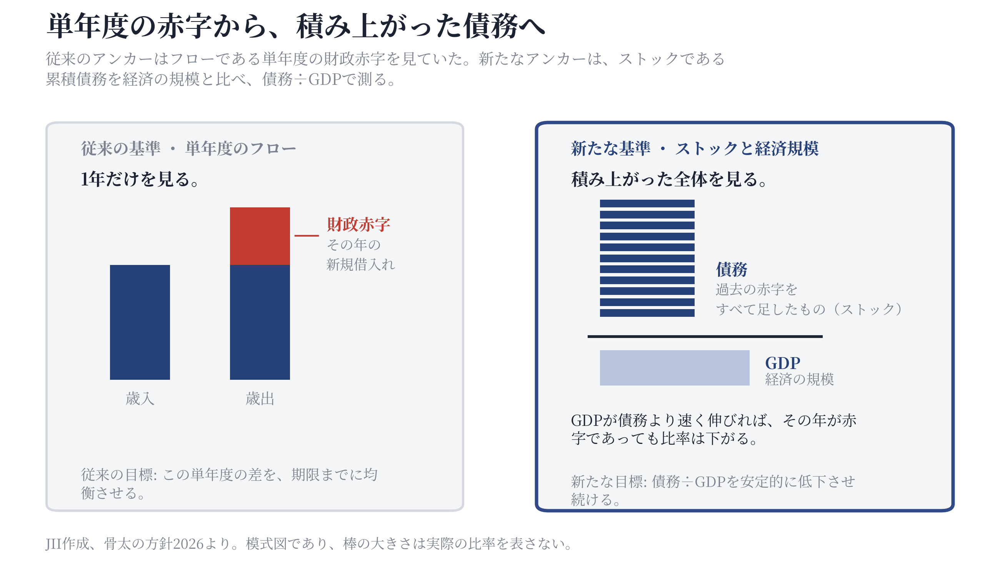
この基準は成長率に大きく左右される。景気が悪化すれば税収は減り、社会保障費は増え、債務は膨らむ一方、名目GDPは伸び悩む。分子と分母の両側から比率が悪化するためだ。政府の試算は景気後退を織り込んでおらず、実際の財政余力は見かけほど厚くない。
そこで政権が採る順序は、「先に投資し、財政再建は後」である。増税や歳出削減に入る前に、工場、インフラ、通信網、技術、人材を整えたい。
狙いは一時的な消費の押し上げではなく、供給力の拡大だ。国内で作れる財・サービスの量が増えれば、賃金、利益、税収も増え、投資を支えた債務の返済余力につながる。
政府は17分野で62の製品・技術を選定した。ワーキンググループは2026年6月24日に数字を示し、内閣は2026年7月21日にこれを採用した。両者は2041年3月期までの官民投資を合計¥370tn超と見積もっている。2026年8月4日の1ドル＝157円換算で約US$2.36tnである。ただし、これは投資の工程表であって、国会が認めた予算ではない。
「超」という語は政府自身のものであり、意味を持っている。内閣府は、合計を出す前に製品間の重複を除いたこと、各製品の記載年限より先の年度を算入していないこと、今後製品が追加されれば金額も積み上がることを明記している。したがって¥370tnは下限であり、意図的に低く置かれている。
公表された個別項目はこの下限に一致しない。そして政府も一致すると述べてはいない。62の製品を合計し、二つの分野にまたがって記載されている二項目——バイオ医薬品・再生医療の¥20.8tnと、グリーンスチールの¥4.2tn——をそれぞれ一度だけ数えると、¥395.6tnとなる。この合計のうち一項目だけ基準が異なる。防衛分野の¥0.34tnは艦艇に係る単年度の予算額であって2041年3月期までの累計ではない。防衛分野が¥4.7tnではなく¥5.04tnとなるのはこのためである。政府は分野別の集計表を公表しておらず、¥26tnの差についての説明も公表していない。野村證券は同じ表を分野別合計付きで公表し、その合計を参考値にすぎないと注記したうえで、製品間に重複があり得ると警告している。その分野別合計を足すと¥395tnになる。
個別項目は測定期間も異なる。コンテンツは2034年3月期まで、デジタルの大半は2036年3月期まで、防災・国土強靱化は2031年3月期まで、残りは2041年3月期までである。したがって全体のおよそ5分の1は、見出しの数字より短い期間で測られている。さらに二つの分野は金額の付いていない構成要素を抱えている。造船は液化天然ガス運搬船を含んでおらず、防衛は安全保障三文書の改定に伴う投資を含んでいない。
分野ごとの数字は、政府がその分野に置く重みとして読むべきである。足し合わせてはならない。
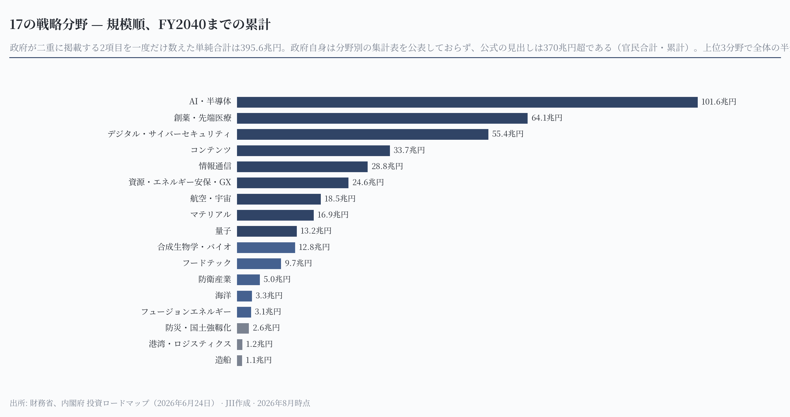
ロードマップに載れば、省庁の政策立案には組み込まれる。しかし企業に資金が付くわけではない。半導体補助金、GX基金、防衛事業はすでに法制・予算面の手続きを一部通過している一方、多くの項目は、まだ作られていない予算と、まだ決まっていない民間投資に依存する。
GXは、構想額と公費の差を示す好例である。政府は2023年、10年間で¥150tnのGX投資を掲げたが、国会が国の負担分として認めた移行債は¥20tnだった。公表した投資額¥7.5に対し、公費はおよそ¥1である。¥370tnのロードマップも、官民の投資を合算する同じ構造になっている。
したがって、短期に実際の入札や契約へ動き得る資金は、2025年11月に閣議決定された¥21.3tnの経済対策であり、その財源は2025年12月に国会が成立させた¥18.3tnの補正予算である。予算措置されたこの資金は基金、入札、契約へ移せるが、経済対策のうち¥2.7tnは税制措置であり、支出ではなく減収であるため入札には回らない。補正予算は残りの大半を賄うが全額ではない。¥370tnという見出しの数字は、将来の予算措置と民間投資がなければ動かない。
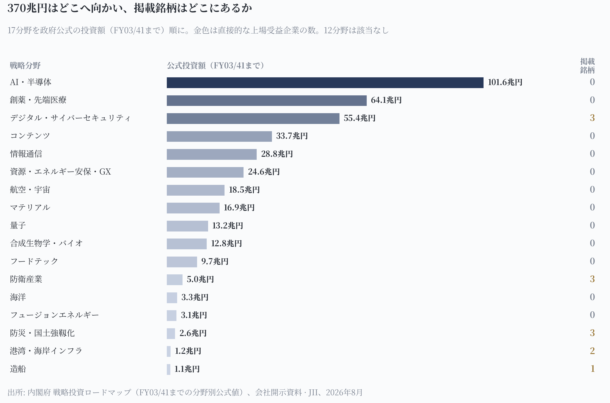
政策の目的は、国内に不可欠な能力を持つことだ。半導体の国内生産、供給源の複線化、重要物資の備蓄、燃料・電力の安定供給、防衛装備の国内整備、港湾強化、災害時にも止まらないインフラが対象になる。
国がある能力を「不可欠」と位置づければ、稼働率が低い年でも維持費が必要になる。保守、備蓄、即応態勢、予備能力への支出は、通常の景気対策より長く続きやすい。
制約は資金調達コストである。日本は構造的な財政赤字を国債で賄っている。工場、整備拠点、備蓄、港湾を追加すれば、国債発行も増える。17分野への支出を持続できるかは、名目成長率と税収の伸びが、そのために増やした債務の利払いコストを上回れるかにかかっている。
国債コストが決める財政余力
日本は長年、歳入を上回る支出を続け、不足分を国債発行で埋めてきた。国債利回りは、この投資計画を賄う資金の値段である。政府が追加支出できる余地を広げも狭めもする、最重要の変数だ。
その値段は急上昇している。10年国債利回りは、2025年9月末の1.66%から2026年6月30日には2.690%へ、さらに2026年8月4日には2.848%へ上昇した。今局面の最高値はこれより前で、2026年7月9日の2.866%であり、1997年5月以来の高さであった。超長期も同時に動いた。8月4日の30年債利回りは3.990%、40年債は3.962%である。両者はいずれも2026年5月19日に4.043%を付けており、これは各系列の開始以来の最高値である。政府が17分野で複数年度の支出を積み増そうとする、まさにその局面である。
日本銀行は国債の買入れを減らしている。その分、民間投資家がより多くの発行を引き受けなければならない。借入れだけが先行し、期待する成長が生産や税収にまだ表れていない間は、投資家がより高い利回りを求める可能性が高い。
この5週間の動きを説明する政策決定は存在しない。日本銀行は2026年6月16日に政策金利を1.0%程度へ引き上げたが、これは対象期間より前である。次いで2026年7月31日の会合では据え置きを決め、9名の政策委員のうち1名が追加利上げを主張した。つまり政策金利は6月30日時点ですでに1.0%であり、8月4日時点でも1.0%のままである。利回りが動いたのは政策が変わったからではなく、市場が国債を評価し直したからである。
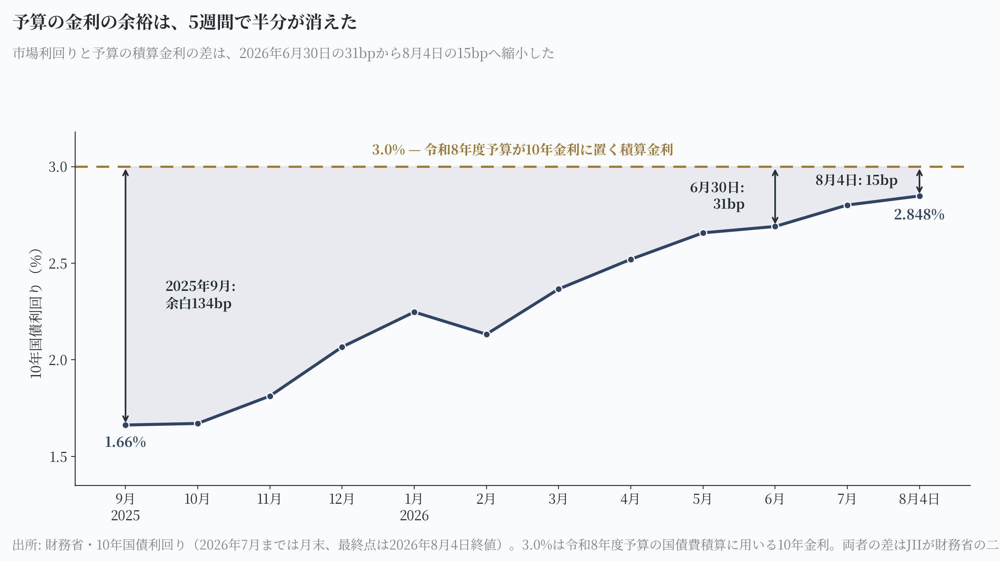
財務省は令和8年度予算を組む際、国債費を積算するために金利を置く必要があった。10年金利の積算金利は3.0%とされ、この数値は緩衝を持たせるため意図的に市場実勢より高く設定されている。2026年6月30日の市場利回りは2.690%であったから、この緩衝のうち31bpが未使用であった。2026年8月4日には利回りが2.848%となり、未使用の緩衝は15bpへ縮小した。5週間で半分が費消されたことになる。
この差は、本レポートが財務省の二つの別々の数字を引き算して求めたものである。同省は積算金利を公表し、日々の市場利回りも公表している。しかし両者の差を系列として公表してはおらず、これを「余裕」と呼んでもいない。
市場利回りは予算の前提金利をなお下回っているため、令和8年度の国債費そのものはまだ圧迫されていない。同省が公表する感応度がその理由を示している。前提の金利経路を1%ポイント上回った場合、令和8年度の増加はゼロ、令和9年度が0.8兆円、令和10年度が2.1兆円、令和11年度が3.8兆円である。国債は満期分から順に借り換えるため、金利上昇が利払い費に届くまでには時間がかかる。したがって今日問うべきは、すでに起きた突破ではなく、緩衝が費消される速さである。
したがって、この投資計画の成否を分ける問いは一つだ。実質的な供給力を増やすのか、それとも主に物価を押し上げるのか。
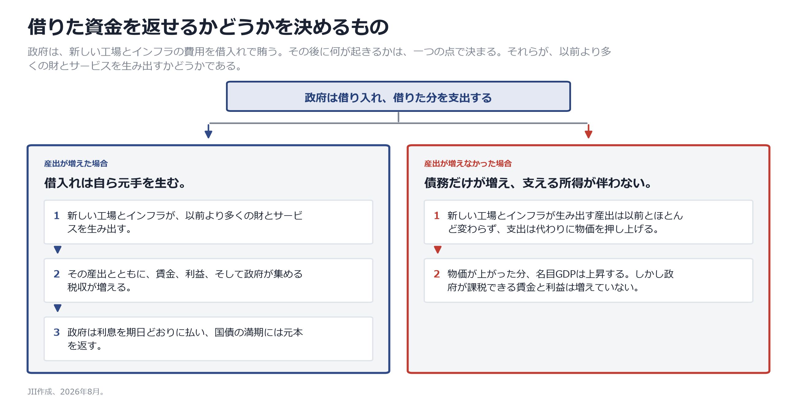
供給力が増えるなら、生産、賃金、利益、税収が伸び、債務の利払い原資も増える。企業の資金需要が強まれば利回りは上がり得るが、同時に返済を支える所得も生まれる。国債入札の応札倍率、期待インフレ率、実際の税収を見れば、利回り上昇が成長によるものか、財政への不信によるものかを判別しやすい。
弱いケースでは、実質生産がほとんど増えず、政府支出が物価を通じて名目GDPだけを押し上げる。債務比率は一時的に改善して見えても、税源と債務返済力は十分に強くならない。
そうなれば選択肢は三つしかない。増税・歳出削減で需要を弱める、借入れを増やして債務残高を膨らませる、あるいは市場金利の上昇を受け入れ、借り換えのたびに利払い費を増やす。いずれも痛みを伴う。
政府と日本銀行には、利回りを抑える手段がある。日銀が国債買入れを再び増やすこともできる。規制を通じて、銀行、保険会社、年金基金にとって国債を保有しやすい資産にすることも可能だ。
ただし、金融抑圧に無償の道はない。預金金利や国債利回りがインフレ率を下回れば、家計と金融機関は購買力を失う。その状態が長引けば、資金は外貨や海外資産へ向かい、円安圧力が強まる。
金利上昇によって、すでに予算措置された¥18.3tnが消えるわけではない。影響するのは、今後の予算でその上にどこまで積み増せるかである。次に見るべきは、承認済みの資金が国から企業の損益計算書へ届くまでの経路だ。
政策発表から企業売上まで
政府は2025年11月に¥21.3tnの経済対策を閣議決定し、2025年12月には国会がその大半を賄う¥18.3tnの補正予算を成立させた。経済対策のうち約¥2.7tnは税制措置で、そもそも入札には回らない。予算措置された資金も、企業へ直接渡るわけではない。売上への経路は毎年8月、各省庁が翌年4月に始まる年度の概算要求を提出するところから始まる。概算要求は資金の要望であって、支出権限ではない。
省庁が支出できるのは、国会で年度予算が成立してからである。予算措置の後、省庁は、国の機関、港湾管理者、自治体、防衛調達機関などの事業主体に実施を委ねる。事業主体が仕様を決め、入札を公告する。
落札した元請けは契約を売上に計上し、履行責任を負う。大型元請けの株価が最初に動きやすいのは、受注が見えやすいからだ。ただし多くの元請けは、部品、材料、ソフトウェア、保守、専門工事を下流の供給企業から買う。
省庁の概算要求から供給企業の初回納入まで、通常は12〜30カ月かかる。株価は要求や落札の公表時点で先に動き、売上計上はその後になる。したがって、政策対象分野に属するだけでは、営業利益がどれだけ増えるかは分からない。
ただ安いだけでは投資仮説にならない。実際の入札があり、顧客の発注があり、その売上が営業利益を動かす規模であることが必要だ。さらに保守、消耗品、更新契約などを通じて繰り返し発生するなら、仮説は強くなる。
この点で小型供給企業は、元請けより大きな利益レバレッジを持ち得る。同じ受注額でも、小型企業の利益に占める比率ははるかに大きい。一方、大型株には公表済みの政策効果がすでに織り込まれている可能性がある。
掲載の基準は結びつきの強さ
掲載企業には、重点投資から自社売上までを追える開示がある。公的機関が直接の買い手である場合、防衛調達で納入先が特定できる場合、または重点投資の対象資産がすでに売上の重要部分を占める場合に限った。
その証拠がない分野は空欄とした。株価の安さ、テーマとの類似、将来の可能性だけでは掲載理由にならない。
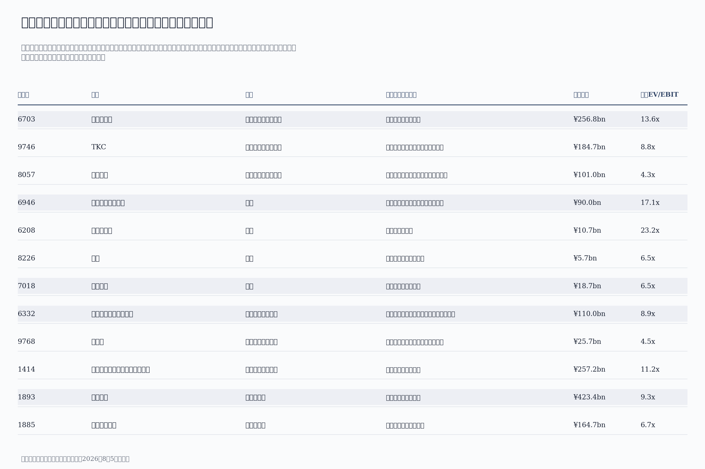
売上への経路は三つに分かれる。公的機関が企業から直接買う。政府契約を取った元請けから供給企業へ発注が流れる。あるいは公的機関が直接の買い手にならず、政策が業界全体の活動を押し上げる。どの経路かで、売上化までの時間と確度が変わる。
買い手を名指しする企業と、セグメントしか示さない企業
12社の証拠の強さは同じではなく、その差が結論に載る3社を決めている。分かれ目は一つの問いである。その会社自身の開示が、対価を払う公的機関を金額付きで名指ししているか。
7社が名指ししている。石川製作所は防衛省を96.5億円で、理経は同省を110.8億円で記載する。内海造船は防衛装備庁を開示された帯で示す。五洋建設は国土交通省を1,194億円、防衛省を847億円で記載する。東亜建設工業は国土交通省を703億円で記載する。ショーボンドは同省とNEXCO各社を挙げる。いであは国および地方自治体からの売上比率を公表し、その背後の省庁名も示している。
4社は官需に面したセグメントを開示するが、公的機関そのものは名指ししていない。沖電気工業、TKC、内田洋行、月島ホールディングスは、いずれも国または自治体を顧客とするセグメントを報告しており、そのセグメントは売上の重要部分を占める。しかし単一の買い手を金額付きで記載した開示はなく、個々の取引関係の大きさを開示から読み取ることはできない。
1社は公的機関をまったく名指ししていない。日本アビオニクスの顧客は日本電気、住商エアロシステム、富士通であり、省庁の契約を保有する元請および商社である。公的資金は届いているが、一段階を隔てており、その金額は開示に現れない。
この序列が結論の三つの基準の第一であり、株価の評価以前の段階で12社のうち5社を落とす。残る7社のうち、石川製作所は23.2倍で本レポート中最も高く、ネット有利子負債が時価総額を上回る。ショーボンドは12社中4番目に高い11.2倍で、2026年2月に計画を引き下げた。理経は営業利益40.2%減を見込み、1日の売買代金は中央値で約4,500万円であり、建てられる規模に限りがある。内海造船は48.0%減を見込む。残ったのがいであ、五洋建設、東亜建設工業である。
1社だけは個別に述べる価値がある。本レポート中で最も割安でありながら、選ばれていないからである。内田洋行は4.3倍で、時価総額の3分の1に当たるネットキャッシュを持ち、デジタル分野3社のうち自らの説明で対象施策を指し示している唯一の会社である。それでも第一の基準を満たさない。同社の官需売上は、金額付きの買い手ではなくセグメントとして開示されているからである。加えて、次に述べる会社計画の問題のうち弱い方を抱えている。
倍率の読み方
本レポートの倍率はすべて、企業価値を営業利益で割ったものである。企業価値は2026年8月5日終値の時価総額に、ネット有利子負債を加え、またはネットキャッシュを差し引いて求めている。その背後にある二つの入力は12社で揃っておらず、いずれも明示しておく価値がある。
営業利益は各社自身の現在の会社計画であり、当社の予想ではない。12社のうち10社では、その計画は進行中の事業年度を対象としている。残る2社ではそうではない。ショーボンドの26年6月期は2026年6月30日に、内田洋行の26年7月期は2026年7月20日に、それぞれすでに終了しており、いずれもまだ決算を発表していない。したがってこの2社の倍率は、すでに終わった年度の会社計画に基づいており、数週間のうちに実績がそれに置き換わる。
時価総額は2026年8月5日終値に、各社が直近に開示した自己株式控除後の株式数を乗じて求めている。その開示以後に自社株買いや消却があれば、株式数はその分だけ古い。ネットキャッシュまたはネット有利子負債は、各社が直近に公表した貸借対照表による。その基準日は2026年3月31日から6月30日までにわたり、公表日は2026年5月8日から8月3日までにわたる。決算期が各社で異なり、四半期の開示時期も異なるためである。前期末より後に四半期を公表している場合は、新しい方の数字を用いている。
12社の倍率は4.3倍から23.2倍まで分布し、中央値は8.9倍である。最も低いのは内田洋行の4.3倍、最も高いのは石川製作所の23.2倍で、同じ尺度で5倍以上の開きがある。本レポートが提供する比較はこの分布であり、それは狭い比較である。市場全体や業種全体の倍率を本レポートは示していないため、8.9倍が東京市場全体に対して割安かどうかを知りたい読者は、その数字を自ら用意する必要がある。
本レポートが示せるのは、同じ買い手に同じ工事を売る企業どうしの比較である。6.7倍の東亜建設工業と9.3倍の五洋建設が最も分かりやすい組み合わせである。ともに海洋土木業者であり、ともに同じ省庁を顧客として記載しており、そして割安な方が減益を見込んでいる会社である。
AI・半導体
日本が世界で強いのはチップそのものではなく、製造装置である。装置需要は骨太の方針より前から加速しており、政策はすでに始まった設備投資サイクルを後押しする。
装置サイクルの上向きは、すでに実績に表れている。SEAJ会員の2026年3月期の世界売上は¥5,198.6bnで、前期比9.0%増。2026年7月2日公表の予測では、2027年3月期に¥6,550.2bn、2029年3月期に¥7,771.8bnへ伸び、3年間のCAGRは14.3%となる。足元のけん引役は単純だ。新設ファブの建屋が完成し、以前に受注した装置を据え付けて売上計上できる段階に入っている。
チップ売上の見通しは、これほど素直ではない。WSTSは2026年（暦年）の予測を、2025年12月のUS$975.5bnから2026年6月にはUS$1,511.2bnへ、半年でUS$530bn超引き上げた。増額分の約8割はメモリーで、同分野の売上は249.5%増と見込まれる。ただし伸びの大半は数量ではなく価格による。チップ売上の急増が、そのまま装置需要の同率増加を意味するわけではない。
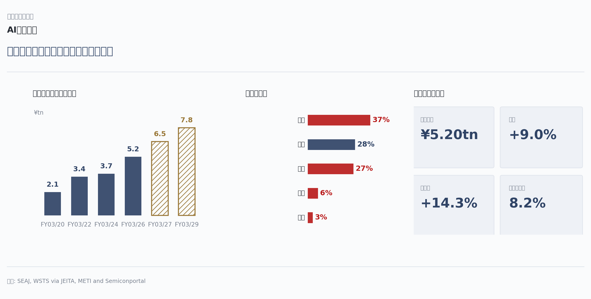
設備投資を支える要因は四つある。第一に、米国のハイパースケーラーはSEAJ推計でデータセンター投資を年率約70%増やしている。第二に、AIサーバーはHBMに加えて汎用DRAMも使い、HBMの積層数は12段から16段、20段へ増えるため、完成品1個当たりのウエハー需要が膨らむ。第三に、先端パッケージング能力は不足している。第四に、日本では車載・パワー半導体向け投資が弱まる一方、2nmロジックと先端DRAMへ資金が移っている。
2026年6月のロードマップは、AI・半導体に2041年3月期までで¥101.6tnを割り当てる。内訳は組込み半導体¥68.0tn、産業別AI¥23.1tn、ロボティクス¥10.5tn。ただし、これは官民設備投資の見込みであり、政府が自由に配れる予算ではない。実際の公費ははるかに小さく、しかもロードマップ以前から存在する。半導体支援の年間予算は2021年度の¥774.0bnから2024年度には約¥1.5tnへ増え、2024年11月に決まった7年間¥10tnの枠内にある。骨太の方針は上昇局面を後押しするが、上昇そのものを生んだわけではない。
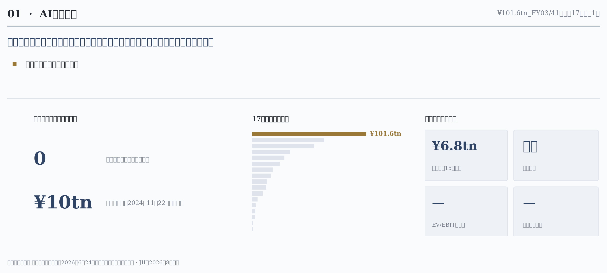
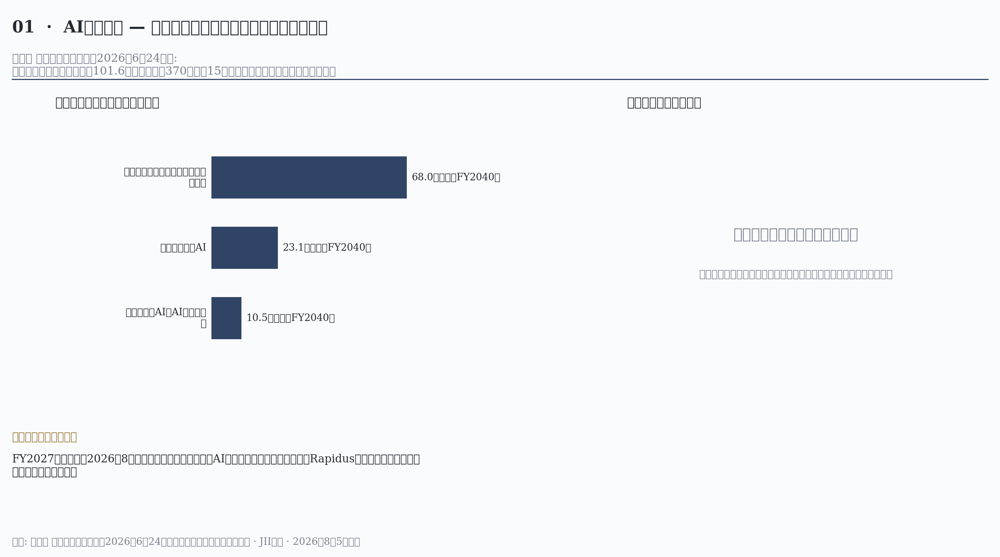
確認すべき日付は二つ。2027年度に向けた経産省の8月末の概算要求で、AIと半導体に独立した新規予算枠が付くか。もう一つは、2026〜27年に公表されるRapidus試作ラインの歩留まりで、量産可能性が見えるかである。
デジタル・サイバーセキュリティ
国内IT市場は伸びているが、ソフトウェアとクラウドの高付加価値部分は海外勢が握る。日本企業が取りやすいのは導入・運用であり、知的財産から生じる利益は国外へ流れやすい。
IDCの市場推計では周辺サービスが伸びている。ITサービスは7.4%増の¥7.02tn、パブリッククラウドは26.1%増の¥4.14tn、セキュリティソフトは14.6%増の¥586.1bnだった。
IDCは2029年まで成長が続くとみる。ITサービスはCAGR 6.6%で約¥9.6tn、パブリッククラウドは16.3%で¥8.82tn、セキュリティソフトは12.0%で¥1.03tn。ただし投資家が見るべきは売上より利益率だ。JISA会員の従業員1人当たり売上高は¥38.15mnだが、外注分を除くと¥21.72mn。売上に占める外注比率は1991年度の20.99%から2024年度には33.54%へ上昇している。
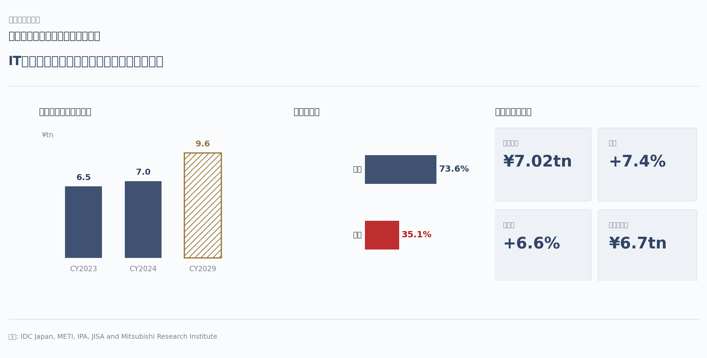
需要を支える要因は三つある。経産省の中央推計では、2030年にIT人材が45万人不足し、技術者単価を押し上げる。企業の約8割はなおレガシーシステムを抱え、自治体は国の標準仕様へ移行しなければならない。さらに能動的サイバー防御法は2025年5月23日に公布され、主要規定が2026年11月23日までに施行される。電力、水道、交通、通信には、期限のある対応需要が生じる。
日本の市場構造は、国内ソフトウェアの所有を増やさないままサービス売上を膨らませる。情報処理人材の73.6%が外部ベンダーに所属し、米国の35.1%を大きく上回る。セキュリティ市場の過半は海外勢が持ち、研究開発費の差も大きい。経産省の比較では、海外企業の研究開発費率が売上の31.6%、29.0%、17.1%なのに対し、国内の対象企業は2.4%、0.6%、0.2%にとどまる。ソフトウェア、クラウド、ネット広告を合わせた日本の赤字は2024年に¥6.7tnとなった。
ロードマップはデジタル分野に¥55.4tnを置くが、期限は二つに分かれる。¥42.0tnは2036年3月期までで、クラウド・データセンター・蓄電池¥32.7tn、政府共通基盤¥7.4tn、セキュリティ¥1.0tn、データ基盤¥0.9tn。残る¥13.4tnは2041年3月期までで、自動運転¥8.2tn、医療DX¥5.2tnである。最大のクラウド枠は、すでに進む需要を積み上げた色彩が強く、政策が置き換えたい海外事業者にも恩恵が及ぶ。追加的な公需として見やすいのは、政府共通基盤、医療DX、セキュリティの計¥13.6tnである。
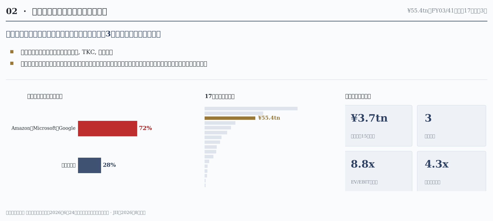
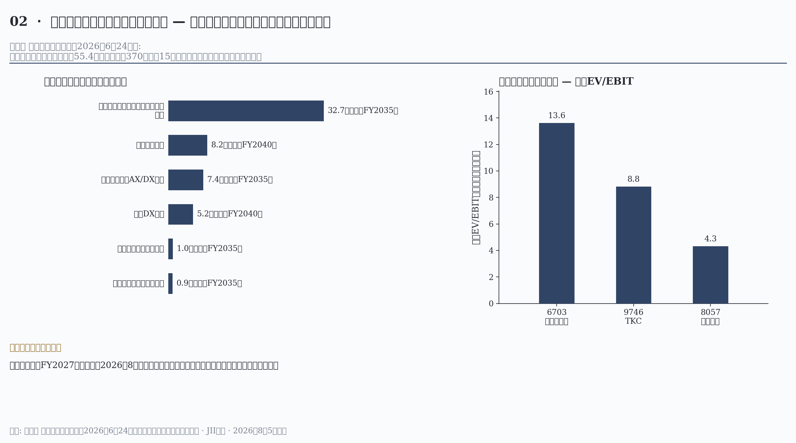
確認点は三つ。デジタル庁の2027年度概算要求、自治体システム移行の最終工程、2026年度の診療報酬改定でデジタルサービスが報酬対象になるかである。この分野は、国や自治体が買い手になり、期限も公開されるため、契約までの道筋を追いやすい。
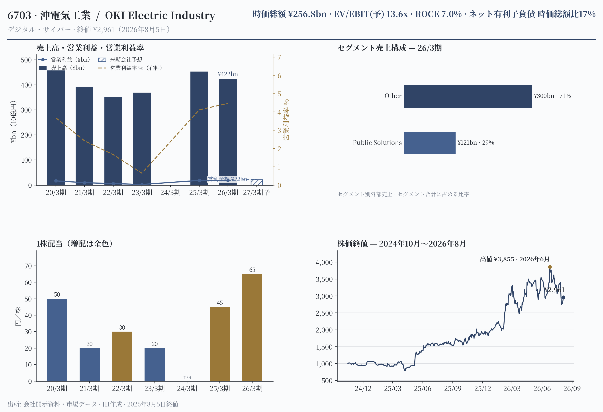
追い風
- 連結売上高の3分の1が、国および地方自治体を顧客とする事業から生じている。
- 27年3月期の連結営業利益を220億円、16.7%増と見込んでいる。
- 同じ事業の中に二つ目の公的な買い手がある。水中音響に対する防衛需要がそれである。
リスク
- 官需に面した事業そのものの営業利益は、27年3月期に11.3%の減益が見込まれている。
- ネット有利子負債は433億円ある。
- 大型システム案件は年度ごとの業績を不安定にする。
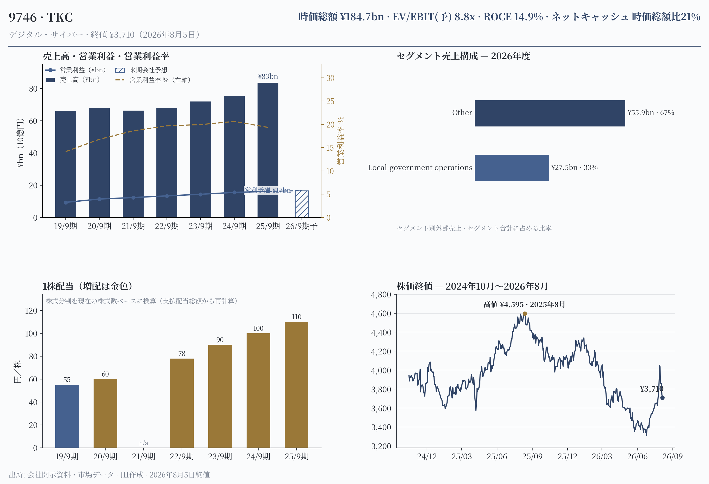
追い風
- 約1,150の自治体がすでに顧客であり、この事業の買い手は自治体以外に存在しない。
- 391億円のネットキャッシュは時価総額の5分の1に相当する。
- 会計事務所向け事業は営業利益が10.5%増加しており、行政の予算サイクルに依存しない。
リスク
- 標準化の期限は過ぎており、この施策の支出はすでに山を越えた。
- 26年9月期の会社計画は増収2.4%、営業増益2.8%であり、前期実績の11.0%と4.1%を下回る。
- 標準化されたシステムは、自治体にとって他社へ乗り換えやすい。
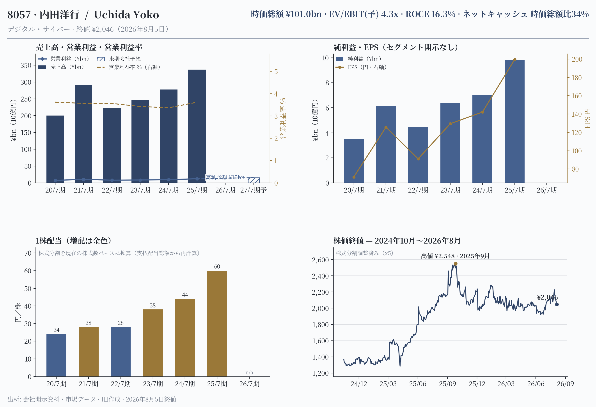
追い風
- 同社は自治体システム標準化と学習用端末の更新を、自らの需要要因として名指ししている。
- 25年7月期の連結営業利益は30.3%増の122億円となった。
- ネットキャッシュが時価総額の3分の1を賄っている。
リスク
- 学習用端末の更新には周期があり、現在の周期はいずれ終わる。
- 機器の比重が高い案件はソフトウェアより利益率が低い。
- 公共関連売上の多くは直接ではなく販売代理店を経由して行政に届く。
情報通信
この分野には、逆向きの二つのサイクルが同居する。国内の情報通信産業は2023年に名目付加価値¥57.4tnを生み、前年比3.5%増、GDPの10.0%を占めた。一方、通信機器は停滞している。CIAJは需要を2026年3月期の¥4,693.8bnから2031年3月期の¥5,130.7bnへ、CAGR 1.7%と予測する。国内需要は年1.9%増だが、輸出は0.7%減る。
世界の無線アクセス網市場は2022〜24年に約20%縮小し、2025年はUS$35bn前後で下げ止まった。Dell’Oroの2030年までの予測成長率は年1%にすぎない。対照的に海底ケーブルは伸びる。TeleGeographyは、2026〜35年の新規投資を年平均約US$5bnと見込み、過去平均のUS$2bn強を大きく上回る。2026〜29年だけでUS$16bn超のシステムが稼働する予定だ。
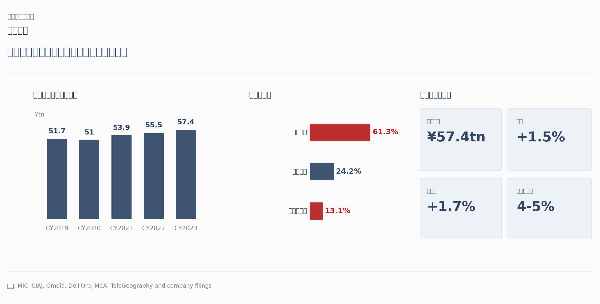
光投資の恩恵は、すでに国内企業の利益に出ている。フジクラの情報通信部門は2026年3月期に売上高44.7%増の¥653.0bn、営業利益65.7%増の¥152.7bn、利益率23.4%となった。NECはCandle、AUG East、I-2SEAを受注し、2026年6月四半期の海底ケーブル売上は52.3%増の¥23.0bn。通信事業者の設備投資も基地局からデータセンターへ移り、NTTは2028年3月期までに¥1.5tn超を投じる。
無線機器はほぼ海外勢の市場になった。世界の95〜96%を5社が握る。NECは2026年1月29日に基地局ハードから撤退し、¥18.0bnの構造改革費用を計上。ソフトウェアと既設機器の保守だけを残した。国内でもEricssonとNokiaが2025年3月期市場の61.3%、国内勢合計は24.2%である。海底ケーブルは例外で、社内の産業調査ではNECを含む世界3社が一式を納入できる。
ロードマップは2041年3月期までに¥28.8tnを割り当てる。次世代無線¥20.5tn、オールフォトニクス網¥5.9tn、海底ケーブル¥2.4tn。最大の無線枠には法的拘束力のある予算がなく、国内ハード企業がほぼ撤退した市場を対象にしている。国内優位が明確な海底ケーブルは最小枠だ。政策は、縮む無線機器と伸びる光インフラという構図を変えない。
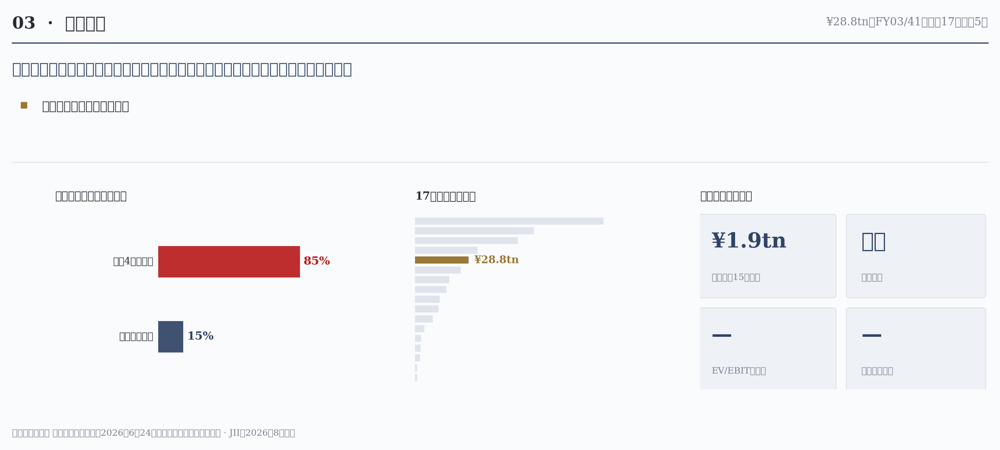
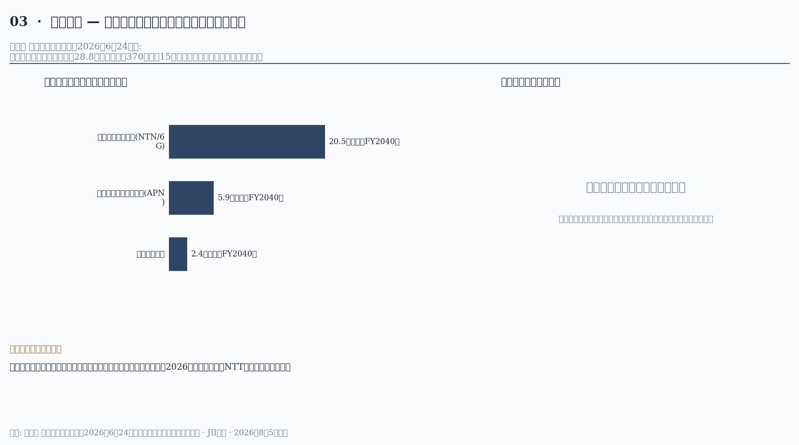
注目点は、2026年の敷設船・国内ケーブル増産の入札、NTTの光電融合網の展開、次世代無線枠が2027年度概算要求に残るかである。通信インフラを自国で管理する戦略的理由は強いが、その整備に直接連動する投資可能な小型株は少ない。
量子
日本は特許に強いが、事業化では出遅れる。顧客売上より政府の研究予算の伸びが速く、上場企業で量子関連売上を投資判断に足る粒度で開示する会社はない。
日本の量子市場は、企業売上より政府予算で測る段階にある。政府支出は2024年3月期に約¥80bn、2025年3月期に¥100.3bn、2026年3月期は少なくとも¥136bn。2026年3月期は当初予算¥36.1bnに、経産省の産業化事業向け補正¥100.4bnを加えた数字である。当初予算は¥42.1bn、¥36.8bn、¥36.1bnとむしろ減少しており、直近の増額は翌年も続くとは限らない単年度補正に依存する。
世界の商用市場も、まだ小さい。量子経済開発コンソーシアム（QED-C）によれば2025年の量子関連売上はUS$1.9bn。内訳は量子計算がUS$1.4bn、センシングが約US$470mmで、成長率は約30%である。
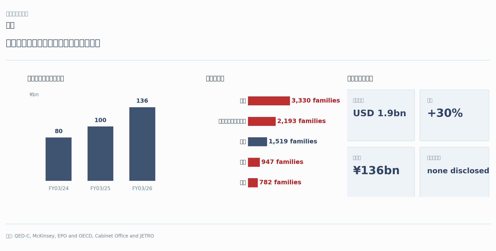
需要を左右する要因は三つ。第一に、当面は政府予算が主役である。第二に、最も明確な期限は耐量子暗号にある。米大統領令14412は、連邦機関に鍵確立方式を2030年12月31日まで、電子署名を2031年12月31日までに移行するよう求める。第三に、ハードウェアの実用規模は遠い。Googleが示す有用な計算機には約100万物理量子ビットが必要だが、2025年4月公表の理研・富士通機は256量子ビットである。
日本の強みは知的財産だ。2025年12月17日公表のEPO・OECD調査では、国際特許ファミリー数で米国に次ぐ2位。一方、産業化に必要なレーザー、極低温、制御電子機器、統合システムでは規模が足りない。ハードと制御ソフトを一体で量子計算機として作る国内企業も、大規模なクラウド接続サービスを運営する企業もない。
ロードマップは2041年3月期までに¥13.2tnを置き、量子コンピューティング¥10.3tn、通信・ネットワーク¥1.5tn、センシング¥1.4tnに分ける。支出を義務づける法律はなく、単年度の予算編成で変更し得る戦略文書に依存する。
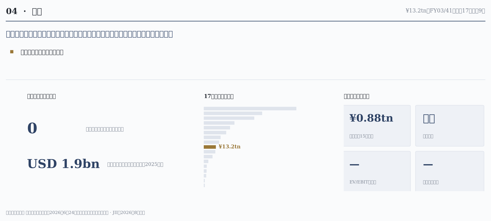
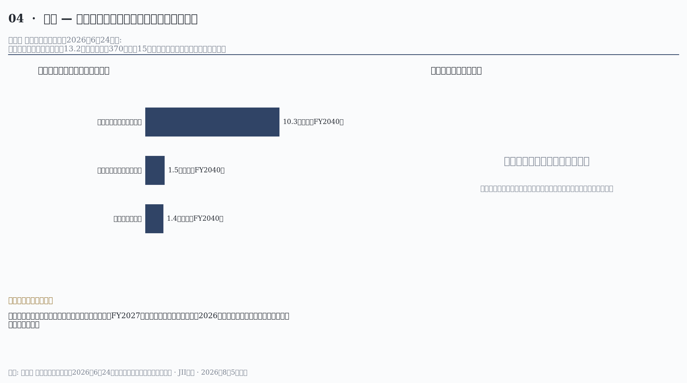
分析を変えるのは、量子暗号通信の最初の調達契約である。研究助成は費用の補填にすぎないが、調達は売上と営業利益を生む。顧客との契約が現れるまでは、量子は公費の付いた研究テーマであって、上場企業の利益テーマではない。
防衛
防衛予算は増加を続ける一方、新規契約の承認額は2025年3月期にピークを付けた。予算増加率よりも、契約済みの整備案件と電子機器の受注残が売上の見通しを示す。
防衛予算は急増したが、増加率は鈍っている。防衛関係費は2023年3月期の¥5,400.5bnから2027年3月期には¥9,035.3bnへ拡大した。一方、前年比伸び率は26.3%、16.5%、9.4%、3.8%と低下している。
先行指標として有用なのは、新規契約権限である。これは、防衛省がいま契約を結び、支払いを後年度へ回せる仕事の総額を示す。5カ年計画ベースでは2025年3月期の¥9,362.5bnをピークに、2026年3月期は9.9%減の¥8,433.2bn、2027年3月期はさらに2.0%減の¥8,260.7bn。より広い集計でも9.2%減の後、0.6%増の¥8,845.9bnにとどまる。現金支出は増えているが、将来の受注パイプラインはもう拡大していない。
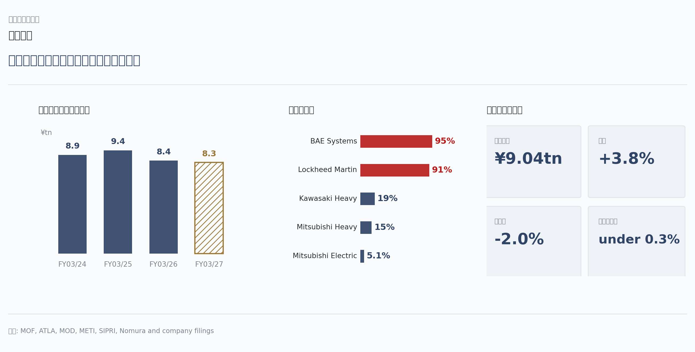
需要はスタンドオフミサイル、弾薬、維持整備に集中する。スタンドオフミサイルには2026年3月期に約¥939.0bnが付き、恩恵は少数の元請けに偏る。2027年3月期の弾薬は¥907.5bn。供給企業にとってより持続的なのは維持整備で、5カ年計画の契約額は約¥4tnから約¥9tnへ増えた。
日本の防衛装備輸出は小さく、SIPRIの輸出25位国が持つ世界シェア0.3%にも届かない。国内のどの元請けでも防衛は事業の一部にすぎず、過去20年で100社超が供給網から撤退したとされる。政策の中心課題は輸出拡大ではなく、国内生産能力を残すことだ。
重要なのは、ロードマップにある防衛¥5.04tnではない。拘束力を持つのは、前計画の2.5倍となる2023〜27年度の防衛力整備計画¥43.5tnで、契約ベースの維持整備に年約¥1.8tnが充てられる。2023年10月施行の防衛生産基盤強化法により、増産設備を自力で賄えない中小企業の機械を国が取得できるようになった。骨太の方針2026は新たなGDP比目標を置かず、次期計画は装備の積み上げで決める。
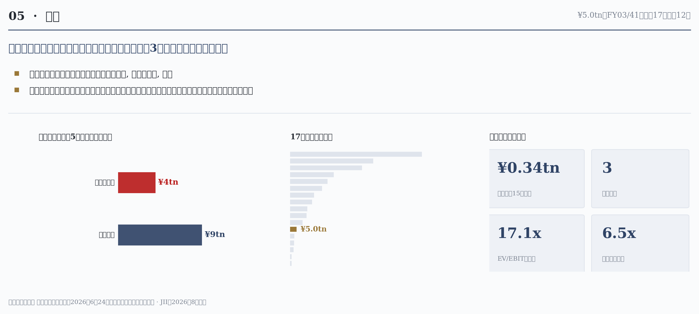
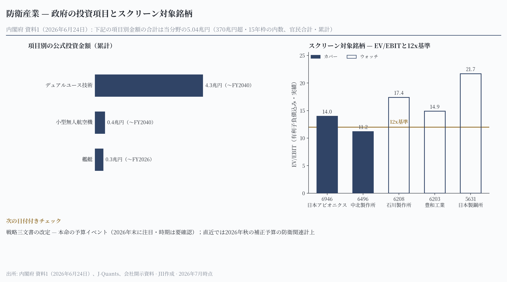
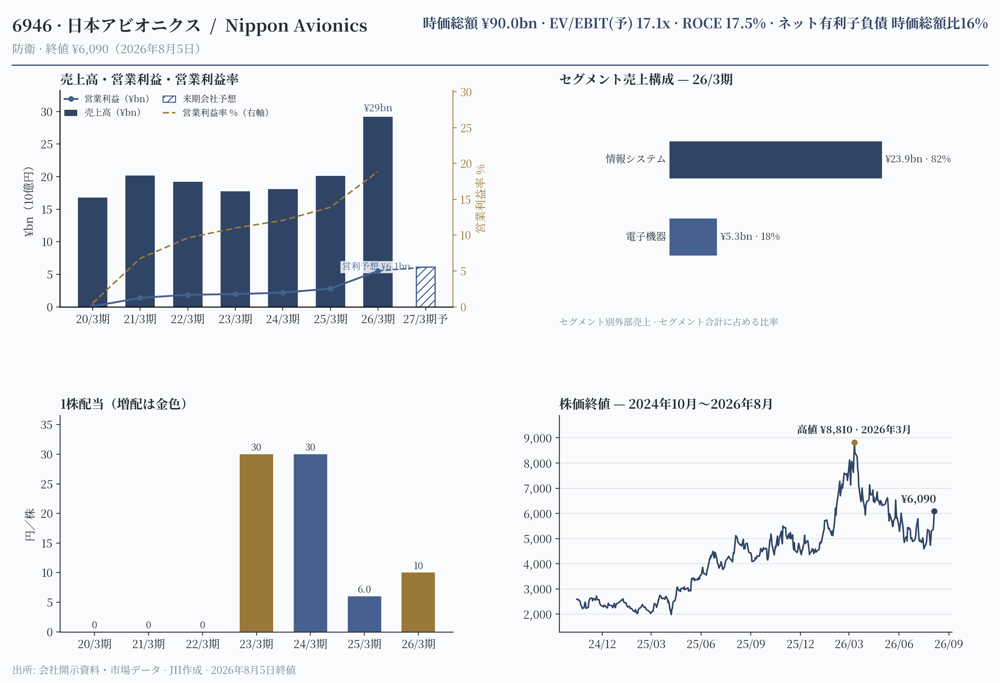
追い風
- 営業利益は10.6%増の61億円が見込まれ、同事業の受注残高は1年分を超える売上を賄う。
- 同事業の受注高332.8億円は同事業の売上高を上回り、同事業の受注残高は46.5%増の296.6億円となった。
- 同社自身が、高水準の防衛予算をこの伸びの背景として挙げている。
リスク
- 公的機関が顧客として記載されていないため、官需との関係の大きさを開示から読み取れない。
- 予想EV/EBIT17.1倍は本レポート中2番目に高い。
- 3社の顧客が売上高の3分の2を占めている。
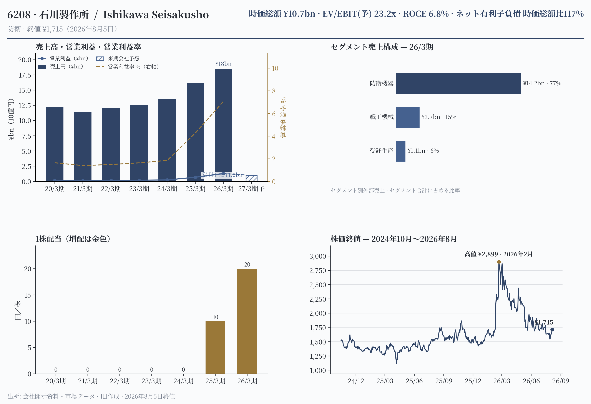
追い風
- 売上高の半分超が、名前の記載された単一の省庁から生じている。
- 26年3月期の連結売上高は14.0%増加し、うち防衛機器セグメントは27.9%増加した。
- 国内で機雷を供給できる数少ない企業のひとつである。
リスク
- 26年3月期の連結受注高は35.5%減の137.4億円となり、連結売上高184.7億円を下回った。この期は受注残の取り崩しで成り立っている。
- 27年3月期の営業利益は23.5%減の10億円が見込まれている。
- ネット有利子負債が時価総額を上回っている。
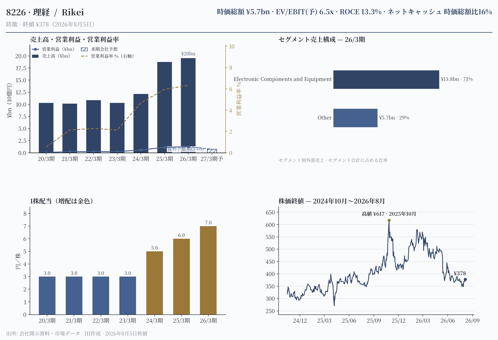
追い風
- 一つの名指しされた省庁からこれほど大きな比率を得ている企業は、ここには他にない。
- 公的資金がひとつではなく三つのセグメントを通じて届いている。
- 同社は防衛省の衛星コンステレーション計画を今後の需要要因として挙げている。
リスク
- 27年3月期の営業利益は40.2%減の7.4億円が見込まれている。エンジン修理案件が平常化するためである。
- エンジン修理の納入は規模が大きく、年度をまたいで不均等に発生する。
- 時価総額57億円と薄い売買高のもとでは、建てられる規模に限りがある。
航空宇宙
国内生産はコロナ前のピークを上回ったが、伸びの大半は回復である。日本企業は完成機や完成エンジンの主導権を持たず、欧米プログラムへ部品・モジュールを供給する立場にとどまる。
日本航空宇宙工業会は25社の生産額を集計している。国内生産は2022年3月期の¥959.2bnを底に、2025年3月期には¥1,986.7bnまで回復した。経済産業省は、より広い範囲の生産者を集計する別系列を公表している。2026年5月19日公表の経産省生産統計によれば、2026年3月期は過去最高の¥2,471.5bnで、経産省系列の2025年3月期を19.9%上回った。
直近3年間の回復率は年約28%だが、その多くはコロナ禍で失った生産を戻したものだ。経産省の広い統計では2020年以前の成長率は年約2.5%で、その延長線上でも足元の規模に近い。内閣府の宇宙市場倍増目標は¥4.0tnから¥8.0tnだが、定義が広く、国内メーカーが実際に参加する機器市場は¥350bn〜¥600bnにすぎない。工場は過去受注分を生産するため、生産額が増える一方で航空機受注は17.4%減る見通しだ。
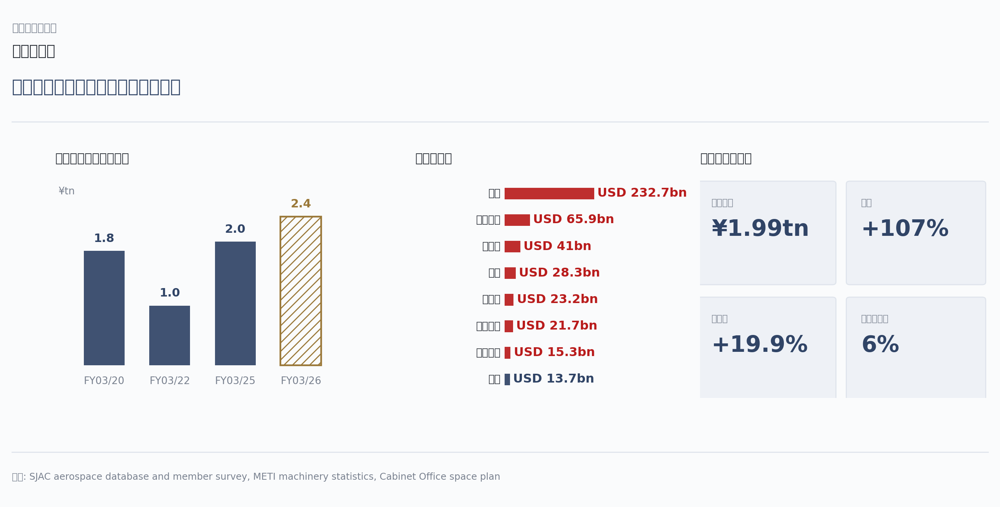
需要源は三つ。2022年の防衛力整備計画はP-1哨戒機、C-2輸送機、US-2を2027年度まで支える。民間では、日本企業が787の機体構造の35%、777の21%を担うため、Boeingの月産ペースが部品数量を決める。宇宙では、国内市場の68%を官需が占め、約¥1tnの宇宙戦略基金が主要な資金源になる。
ロードマップは2041年3月期までに¥18.5tnを置く。衛星・サービス¥6.4tn、月面・低軌道技術¥5.6tn、民間航空機¥3.5tn、ロケット・射場¥2.3tn、空飛ぶクルマ・ドローン¥0.7tn。大半は14年間の見通しである。実際の予算基盤は宇宙戦略基金で、約¥1tnという10年構想に対し、補正予算で分割して資金が入る。
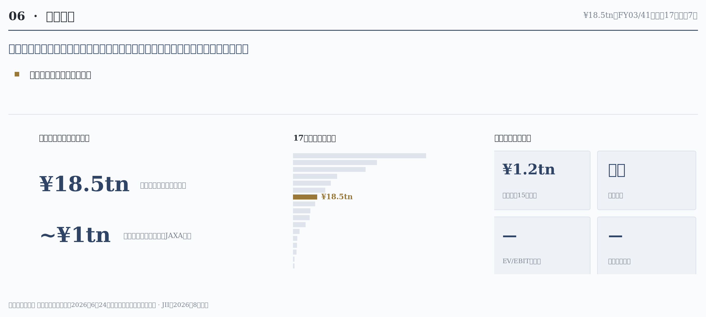
研究開発助成は費用を賄うが、継続的な顧客売上を生まない。より有効なのはアンカーテナンシーで、国が打上げ能力や衛星データを先に購入すると約束し、開発企業が契約収入を担保に設備を建てる仕組みである。こうした契約を持つ上場小型株は少ない。
本レポートはこの分野で企業を挙げていない。自社の開示によって、予算措置された航空宇宙の施策と売上との直接的かつ重要な結び付きを示せる上場企業を確認できなかったためである。
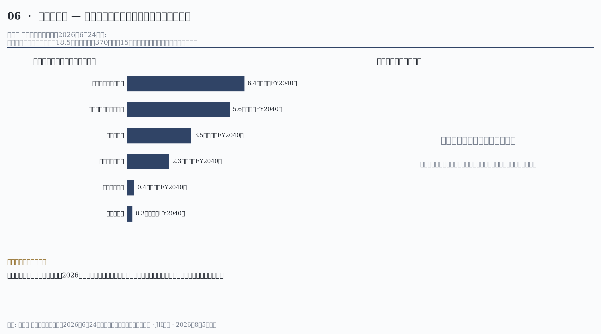
海洋
世界の海洋経済が倍増する間、日本は停滞した。公共顧客が不可欠であり、ロードマップの総額ではなく開示された受注が上場企業の売上を決める。
1995〜2020年に世界の海洋経済が倍増する一方、日本は横ばいだった。この長期的な乖離が、政府による国内能力再建の出発点である。
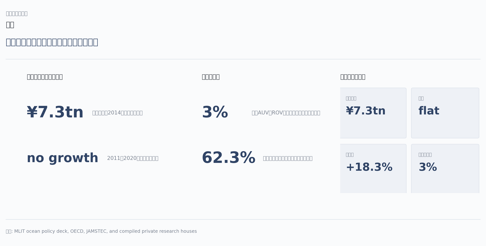
2024年の無人海洋機器売上の62.3%は防衛向けだった。洋上風力は調査・点検需要を作り得るが、三菱商事主導の連合は建設費が入札想定を上回り、2025年8月に第1ラウンドの3海域すべてから撤退した。南鳥島沖では2026年2月1日にレアアース泥を初めて揚泥し、2027年2月の試験では1日350トンの連続回収を目指す。MEGURI2040では2026年3月までに4隻がレベル4相当の商用認証を得た。
日本には、この産業を育てた大口顧客がない。2023年の世界ROV需要の少なくとも44.6%を海洋石油・ガス開発が占めたが、日本に有意な沖合生産は存在しない。国内企業は、世界需要の約3%しかない小さな母市場で技術を育ててきた。
ロードマップは2041年3月期までに¥3.3tn。海洋ドローン¥1.2tn、海洋状況把握¥1.2tn、海底技術¥0.9tnである。ドローン枠は年平均約¥80bnとなり、2024年の国内推計市場¥23.1bnを上回る。骨太の方針は北極域研究船、しらせ後継船、深海母船にも言及する。この分野では、公的調達は補助ではなく市場そのものを作る。
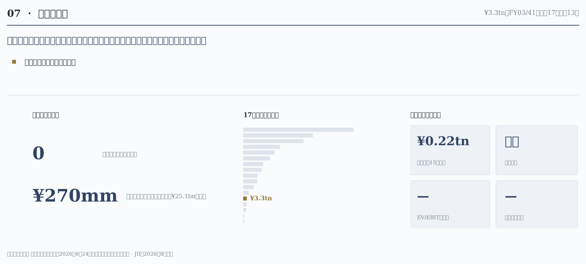
供給企業の採算が改善するのは、同じ設計で複数隻を受注するか、調査契約が複数年に及ぶ場合である。初期の設計費を回収するには繰り返し生産が必要だ。継続的な営業利益に最も近い上場企業は、毎年各省庁が再入札する調査会社や計測機器会社である。
本レポートはこの分野で企業を挙げていない。各省庁が発注する調査業務の多くは陸上施設のための地質・土質調査であり、海底技術や海洋状況把握とは別の事業である。したがってこの施策との結び付きを示す証拠にはならない。
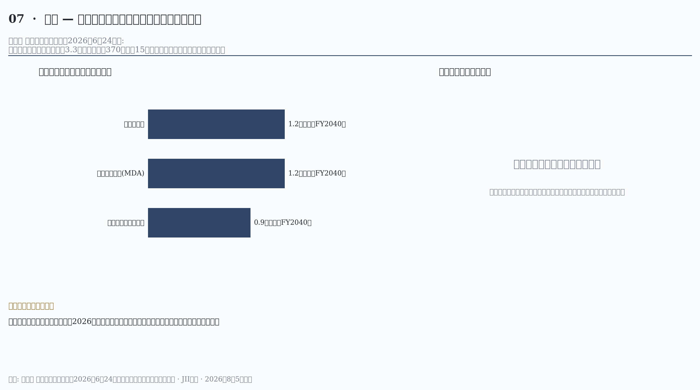
造船
国内造船業の年間売上は約¥3.0tnだが、生産能力は縮小している。竣工量は2019年の1,600万総トンから2024年の900万総トンへ44%減った。日本の船主が発注する船を国内だけで造れず、一部は海外造船所へ流れている。
需要見通しは国内供給力より強い。日本造船工業会、Clarksons、OECDはいずれも、2035年までに年8,000万〜1億総トン超の新造船が必要とみる。国土交通省の政策なしケースでも、日本の建造量と世界シェアはさらに低下する。
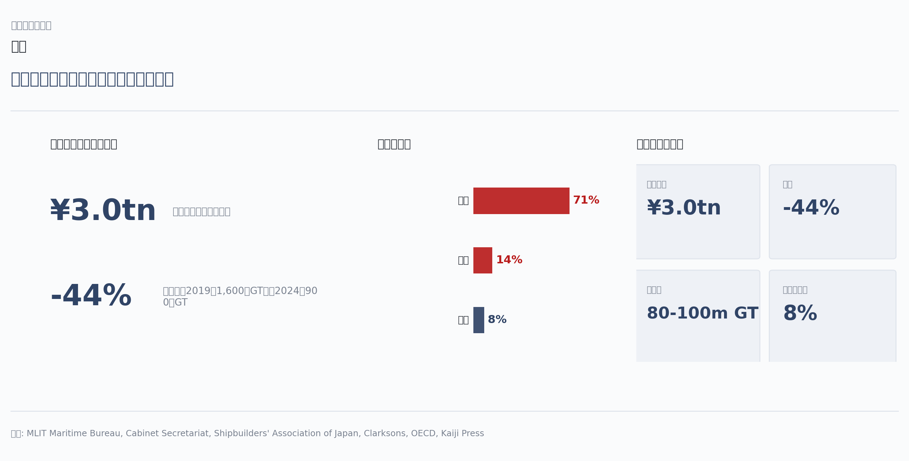
転機になり得るのは燃料転換だ。IMO規制で従来の重油船の経済性が悪化すれば、船主はLNG、メタノール、アンモニア、水素へ移る。日本の訴求点は生涯コストで、建造価格が高くても燃費の良い船なら、運航期間全体では安くなる可能性がある。
一方、コストと能力不足は構造的な弱点だ。日本の受注シェアは2017年の19%から2024年に8%へ低下し、中国は30%から71%へ上昇した。国交省の指数では、4万重量トン型ばら積み船の建造コストは日本100に対し中国81で、23.5%高い。19ポイントの差のうち約14ポイントは鋼材、8ポイントはその他材料で、人件費は3ポイント日本に有利である。能力増強も遅い。1,200トン級ゴライアスクレーンは約¥9bn、納期は7年超。日本が守る市場は、防衛省・海上保安庁船の建造・修繕が国内100%という点にある。
ロードマップは¥1.1tnで、2034年度までの次世代船¥1.0tnと、2035年度までの修繕¥0.1tnからなる。船体は特定重要物資に指定され、民間造船所内の設備にも公費を使えるようになった。2025年度補正で¥120bnを措置し、10年間¥350bnの造船業再生基金が動き始めた。ただし年平均約¥35bnは業界売上の1〜2%にすぎず、それだけで利益を押し上げる規模ではない。
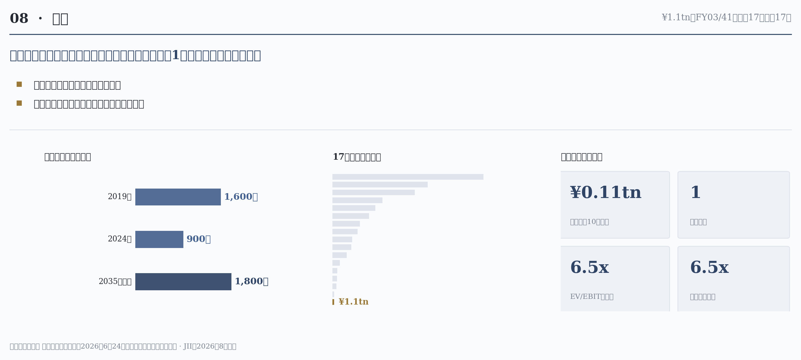
公的資金は、船の発注または設備投資を通じて造船所へ届く。船の売上は建造の進捗に応じて計上され、ドック、クレーン、自動化への補助は処理能力を増やす。現在の制約は既存ドックで使える労働時間だ。業界報道では、人手不足で2025年の低い竣工計画さえ未達だった。受注があっても、能力がなければ売上にはならない。
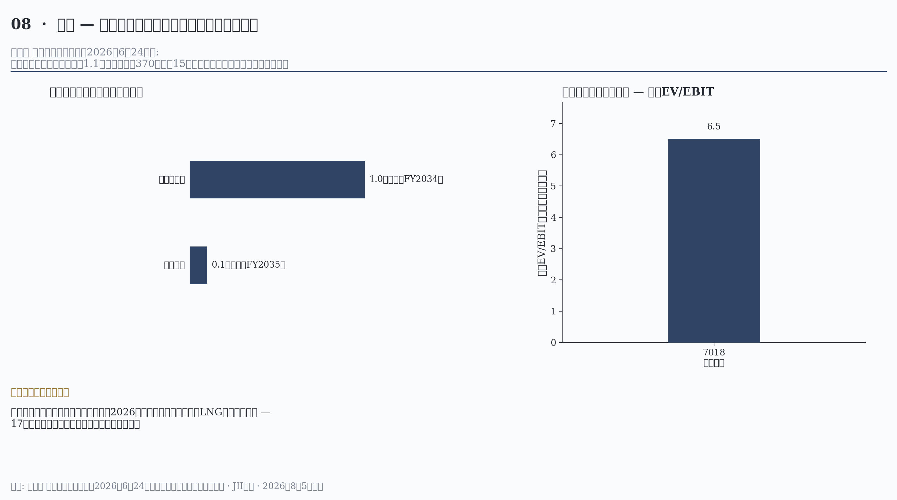
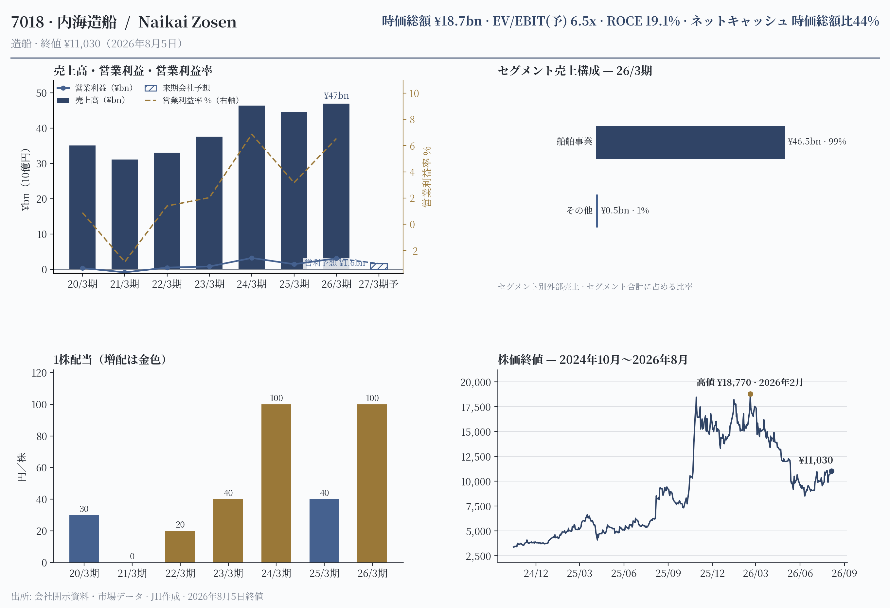
追い風
- 26年3月期の受注高は67.4%増の803億円となり、輸送艦を含む新造船9隻と修繕船等を受注した。
- 受注残高は33.7%増の1,343億円となり、売上高の3年分に近い。
- ネットキャッシュは時価総額の44%を占める。
リスク
- 27年3月期の営業利益は48.0%減の16億円が見込まれている。
- 開示された同庁の帯は25年3月期の10〜30%から26年3月期の10〜20%へ下がった。
- 少数の船が各年度の業績を決め、契約後に資材価格が動きうる。
素材・重要鉱物
日本は汎用素材でシェアを失う一方、高機能分野では競争力を保つ。供給確保計画の認定は受益企業、設備、時期を特定し得るが、該当する上場小型株はまだ示されていない。
経産省が「素材・部品」としてまとめる化学、紙・パルプ、窯業の一部、鉄鋼、非鉄金属は、2024年に出荷額¥103tn、付加価値¥30tnを生んだ。日本の製造業全体の付加価値¥110tnの4分の1超である。一方、2026年2月19日時点でも、経産省は将来の市場規模や目標シェアを公表していない。
汎用品の世界シェアは15年にわたり低下している。粗鋼生産は2010年の1億960万トンから2024年の8,400万トンへ23%減り、日本の世界シェアは8%から5%へ低下した。同じ間に中国は44%から53%へ上昇した。ネオジム磁石では、日本の世界シェアは2020年に約15%だったが、経産省は2025年に10%を下回ると予測していた。IEAは、クリーンエネルギー向けレアアース需要が2040年まで年約5.9%で増えるとみる。
需要の中心は電気自動車で、日本製永久磁石の43%が自動車向けである。供給リスクは悪化している。中国は2023年8月のガリウム・ゲルマニウムを皮切りに、2025年4月には重希土類7種まで輸出許可制を広げた。日本のレアアース輸入全体に占める中国比率は2010年の89.8%から2024年に62.9%へ下がったが、重希土類は依然100%を中国に頼る。
戦略上のボトルネックは採掘ではなく加工である。中国は採掘、分離、精製、製錬、合金化、磁石製造までを一体化している。磁石原価の半分超をレアアース原料が占めるため、垂直統合した企業は構造的に有利だ。日本が強いのは電解精製以降と完成磁石である。米国は出資、10年間の価格下限、長期購入、US$2bnの国防備蓄で対抗している。高機能素材では日本の優位が残り、信越化学とSUMCOはシリコンウエハー世界市場の計54%を握る。
ロードマップは2041年3月期までに¥16.9tnを置く。製錬・分離・精製・解体¥6.3tn、AI設計複合材¥5.2tn、水素還元のグリーンスチール¥4.2tnなどである。ただし、ほぼ全額が未予算化だ。2022年の経済安全保障推進法は重要鉱物と永久磁石を特定重要物資に指定し、認定された民間工場の設備に公費を出せる。
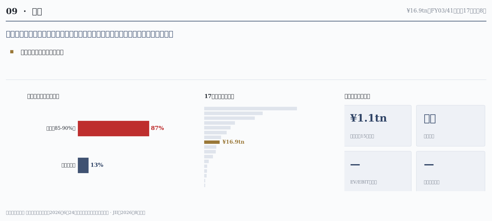
投資家にとって重要なのは、その認定である。会社名、工場、認定日が特定され、その後に設備発注が続くためだ。認定から供給企業の売上までには時間差があり、そこが投資機会になる。経産省は2025年10月29日までに135件の供給確保計画を認定しており、名前の挙がった対象には信越化学工業（4063）と大同特殊鋼（5471）が含まれる。ただし、これまでの認定から上場小型株の受益企業は生まれていない。
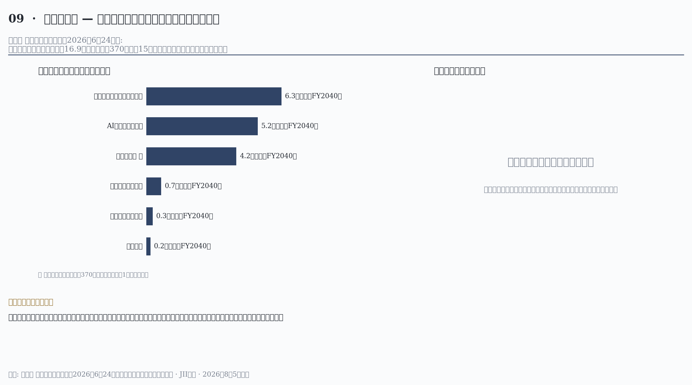
したがって、本レポートはこの分野に銘柄を載せない。見方が変わるのは、上場する加工会社と対象工場が認定で名指しされる場合、または国が精製レアアースを公表価格で備蓄購入する場合だ。どちらも政策効果を利益に結びつけて検証できるようにする。
合成生物学・バイオものづくり
日本には発酵の蓄積がある一方、商用規模のバイオ製造能力が足りない。実績市場の伸びは小さく、政府の長期予測は現在の採算性から見て大幅な拡大を前提にしている。
実績として把握できる市場の伸びは緩やかだ。広義の国内バイオ産業売上は2024年に¥6.912tn、前年比1.4%増。2025年は5.3%増の¥7.281tnと推計される。バイオ医薬品は年9.6%、従来型医薬品は5.5%の成長見通しである。一方、根拠が十分に開示されていない別予測は、国内外を合算したバイオものづくり市場を2030年¥46.2tn、2040年¥114.8tnと置く。
経産省自身も採算の壁を認めている。生物生産は従来法よりコストが高いため、まず広がるのは燃料や基礎化学品ではなく、化粧品、香料、機能性素材など単価の高い一部製品だ。工程コストを従来法の約1.2倍まで縮めることが、なお技術目標になっている。米国でも有力なプラットフォーム企業が複数破綻した。
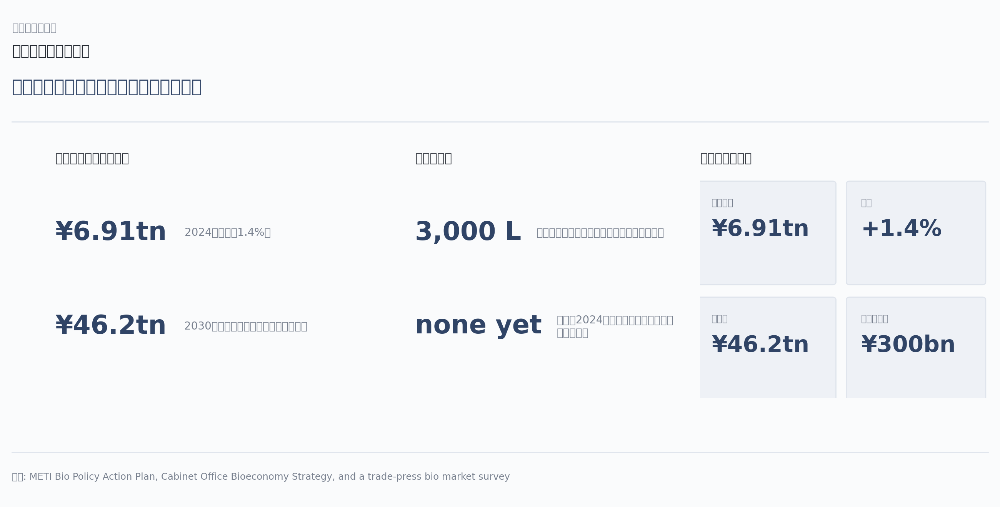
日本の強みは微生物と発酵の現場力にある。水素酸化細菌、工業発酵、長年維持された微生物株の蓄積は厚い。弱いのはDNA設計、ゲノム探索、機械学習などソフトウェアとデータの層で、より多くの付加価値がここに集まる。規模も不足する。公的施設の最大培養槽は3,000リットルで、商用採算に一般に必要な1万リットル超を下回り、開発企業から設備不足がすでに指摘されている。
ロードマップはバイオものづくりに2041年3月期までで¥12.8tnを置き、隣接する医療分野ではバイオ医薬品・再生医療にさらに¥20.8tnを割り当てる。実際の予算ははるかに小さい。国のバイオものづくり基金は約¥300bnで、技術段階の達成を確認しながら分割交付される。見込み額¥42に対し、予算は約¥1である。
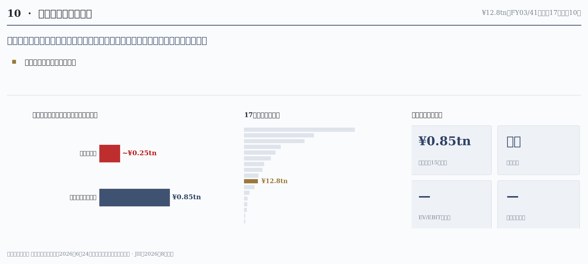
公費が上場企業の利益へ届くのは、工場建設の段階だ。開発企業が技術審査を通過し、バイオファウンドリーを建て、培養液で改変微生物を育てた後、分離、晶析、ろ過、乾燥の装置を購入する。機械と原料の供給企業は、開発企業が商用売上を得る前に代金を受け取れる。
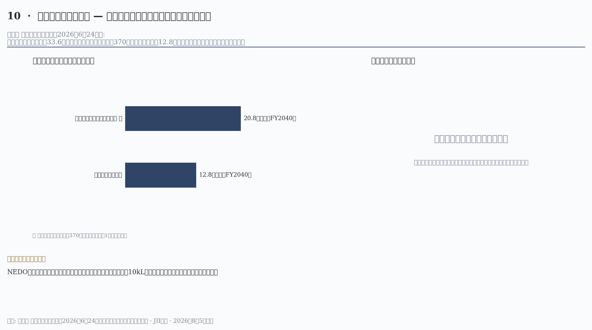
注目点は基金の技術審査、国内初の1万リットル超バイオファウンドリー、発酵原料が特定重要物資に指定されるかである。
創薬・先端医療
国内医薬品市場は緩やかに伸びる一方、薬価改定が売上を抑える。重点投資と売上の直接的かつ重要な結びつきを確認できる企業はない。
IQVIAは国内処方薬市場が2026年3月期の¥11.216tnから2031年3月期の¥11.899tnまで年1.2%で成長すると予測し、従来の1.4%から引き下げた。新薬は¥1.566tnを上乗せする一方、予定される薬価改定が¥3tn超を削り、処方数量の増加が差の大半を埋める。
最大の制約は薬価政策である。日本では実質的に毎年薬価が見直され、IQVIAは中間年で3.8〜3.9%、通常改定で4.7〜6.2%の引下げを想定する。この逆風に数量増で対抗しつつ、後発品への置き換えも進む。2024年10月以降、長期収載品を選ぶ患者は価格差の一部を自己負担し、後発品の数量シェアは2031年3月までに91.9%へ達する見通しだ。日本の低薬価が国際参照価格を通じて米国の償還価格を下げ得るため、海外製薬企業も日本での値上げを求めている。
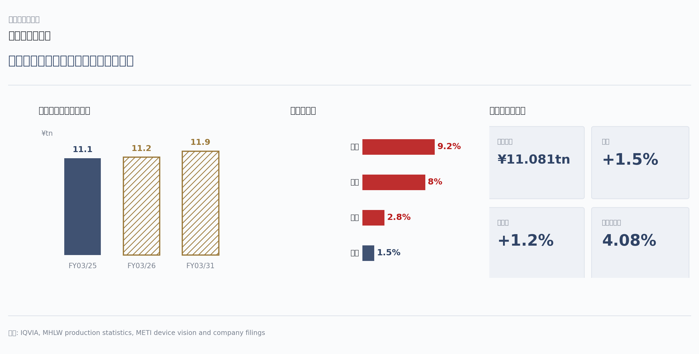
世界シェアの低下は長期的だ。日本は世界医薬品市場の10.8%を占めた2010年3月期から、2020年3月期に5.6%、2025年3月期に4.08%へ低下し、IQVIAは2030年3月期に3.1%と予測する。医療機器も同じで、世界シェアは1990年の22.1%から2018年に7.3%へ低下した。2024年の国内医療機器生産は0.4%減の¥2.664tnで、輸入¥3.454tnを下回る。
ロードマップは2041年3月期までに¥64.1tnを置くが、政策は内部で矛盾する。2025年末から段階施行される改正薬機法は、人工呼吸器、血漿分画製剤、バイオ後続品の国内生産を支援する。一方、社会保障改革はバイオ後続品への置き換え、高齢者負担の引上げ、2028年3月期の薬価改定を進める。研究支援が利益に届くには承認と処方を待つ必要があるが、薬価引下げは決まった日に全薬価へ効く。
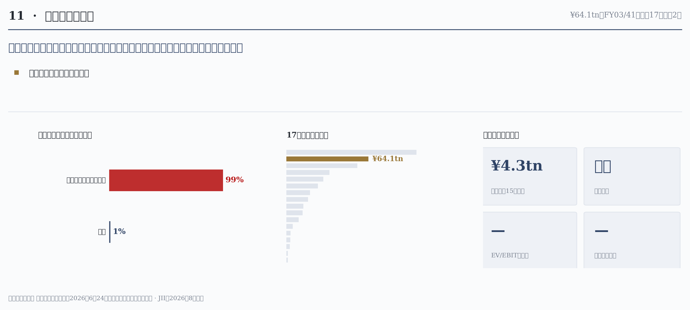
分析を変えるのは、特定薬を2028年3月期の薬価改定から外す明文化された例外である。医療機器では、国内企業が新製品で世界初承認を得れば同等の材料になる。それまでは国内生産¥2.664tnが輸入¥3.454tnを下回る。
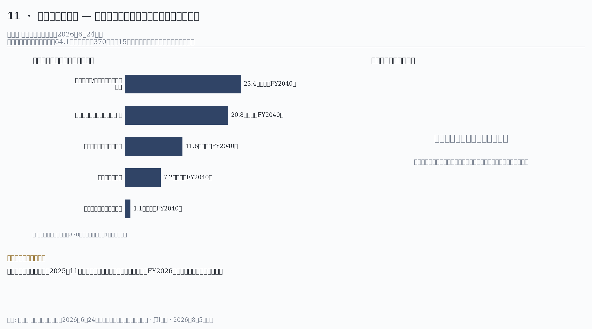
エネルギー安全保障・GX
電力需要は20年ぶりに上向き、設備各社の受注残には建設需要が表れている。開示資料から、予算措置された施策と自社売上との直接的かつ重要な結び付きを示せる企業は確認できなかった。
日本の電力サイクルは上向きに転じた。OCCTOは需要が2026年3月期の803.4bn kWhから2036年3月期の846.1bn kWhへ、年約0.5%増えると予測する。家計需要の減少をデータセンターと半導体工場が上回り、20年続いた減少が止まる。受注はすでに積み上がっている。三菱重工の2026年3月期受注は約20%増の¥7.6536tn、期末受注残は¥13.2376tnで、コンバインドサイクル発電所が¥5tn超を占める。
需要源は四つ。データセンターと半導体工場、供給安定性、原発再稼働、新たな再エネを接続する送電網投資である。2015年以降15基が再稼働し、柏崎刈羽6号機は2026年2月16日に発電を開始した。福島事故後では東京電力初の再稼働である。再稼働のたびに、安全対策、保守、燃料の複数年需要が生まれる。
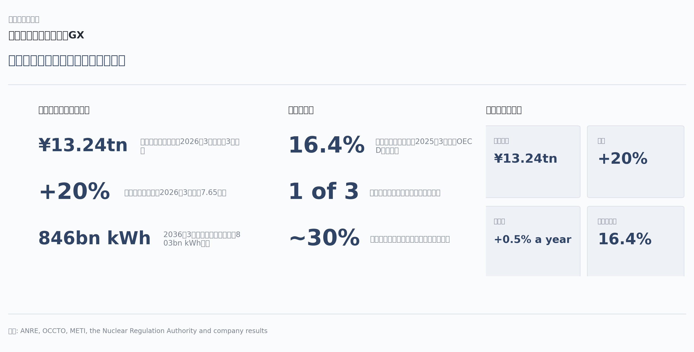
日本の競争力は分野ごとに異なる。太陽光導入量は世界5位だが、パネルは中国依存。2026年6月30日時点で原発33基のうち稼働11基、停止22基で、停止中18基は新規制基準を一度も通過していない。大型ガスタービンでは、三菱重工がGE Vernova、Siemens Energyと世界3社寡占を形成する。小型モジュール炉では、日本企業は米国企業が持つ設計へ部品を供給する立場が中心で、プラットフォームの所有者ではない。
ロードマップは2041年3月期までに¥24.6tnを置く。水素・アンモニア¥6.2tn、洋上風力¥5.1tn、次世代原子炉¥5.0tn、ペロブスカイト太陽電池¥4.1tn、グリーンケミカル¥3.2tn、地熱¥1.0tn。より広いGX計画は10年間で¥150tn超を掲げる一方、認められた移行債は¥20tnで、公的借入¥1に対し構想額は約¥7.5。2027年3月期から大口排出企業は排出量に見合う枠を確保する必要がある。2024年の水素社会推進法は、認定事業者へ基準価格と市場価格の差を補填できる。
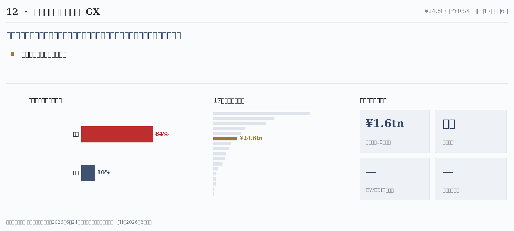
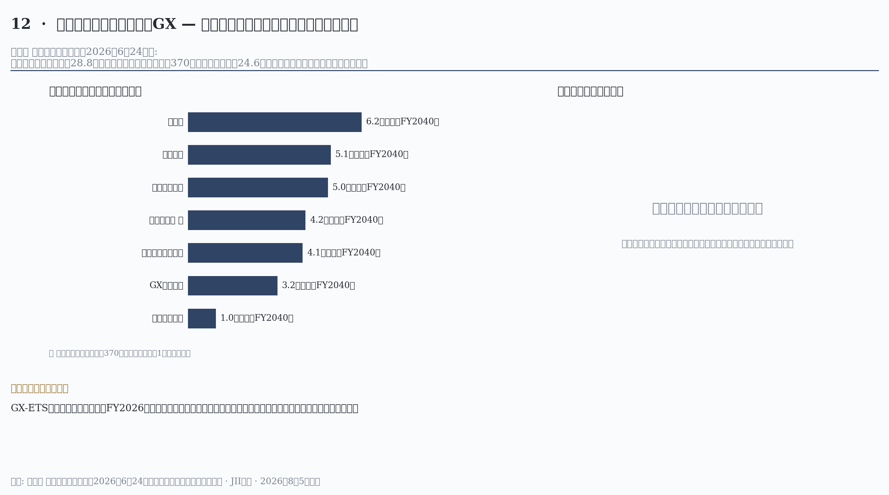
注目点は、最初の排出量遵守期間と炭素価格、水素支援の第1号採択、2027年前後に見込まれるペロブスカイトの投資判断である。需要は国内にあるが、上場企業の利益として国内に残るとは限らない。
核融合
核融合はまだ電力売上を生んでいないが、民間資金は急増し、日本の工場は重要部品を供給する。世界市場には機会がある一方、上場企業を評価できる粒度の受注開示はない。
核融合には、発電による事業売上がまだない。反応を起こし維持するために投入したエネルギーを上回る核融合エネルギーを、民間装置はまだ生み出していない。そのためFusion Industry Associationは資金調達額を追う。2026年7月13日時点で56社に累計US$14.24bn、2021年の23社・約US$2bnから大幅に増えた。2年の鈍化を経て、2026年7月までの12カ月は過去最高のUS$4.48bnとなった。
資金を前倒ししている要因は二つ。AIデータセンターが24時間電源の将来顧客になり得ること。Googleは2025年6月30日、Commonwealth Fusion Systemsから200MWを購入する条件付き契約を結んだ。ただしGoogle自身も出資者で、契約はSPARCが正味エネルギーを達成することが前提である。もう一つは、コンパクト炉が大量のREBCO高温超電導テープを使うことだ。英国STEPの試作炉だけで3万kmを使用する見込みである。
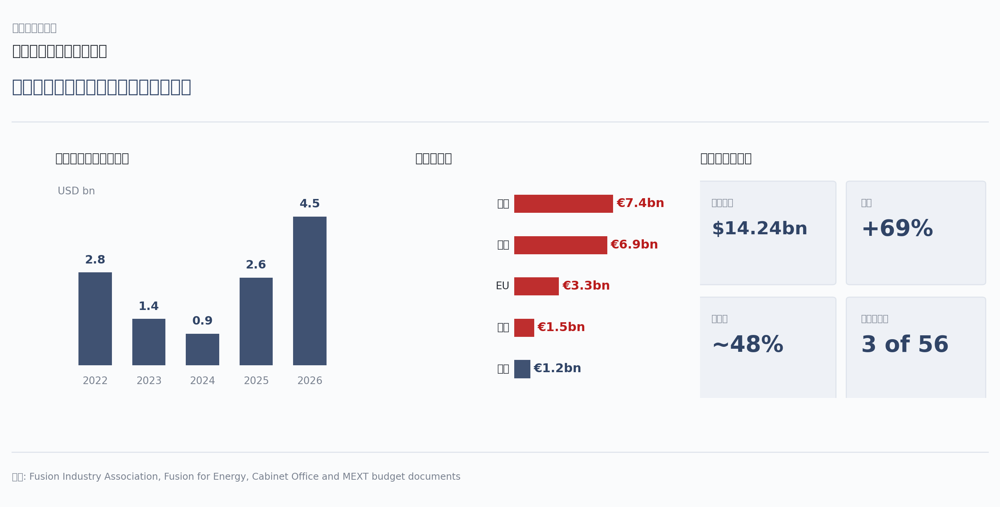
日本の強みは製造であり、ベンチャー資金ではない。調達額US$1bn超の5社はすべて米国企業。国内スタートアップ4社の公表調達額は合計約US$310mmだが、Commonwealth Fusion Systemsは2026年7月30日に単独でUS$4.0bnへ達した。日本の工場はITERのトロイダル磁場コイル19基中9基を製造し、ダイバータ外側垂直ターゲット58基すべてを受注、うち三菱重工が38基を担う。REBCOテープでは、関連成膜方式を使う世界4社の一つがフジクラで、この4社で世界供給の過半を占める。
ロードマップの¥3.1tnは産業規模ではなく、実証炉1基の想定費用として示される。2025年6月の戦略は2030年代の世界初実証を目指すが、規制制度は未決定。当初予算は2026年3月期¥20.7bn、2027年3月期案¥20.8bnで、要求¥30.9bnを下回った。商用電力売上ではなく、各年度予算への依存が続く。
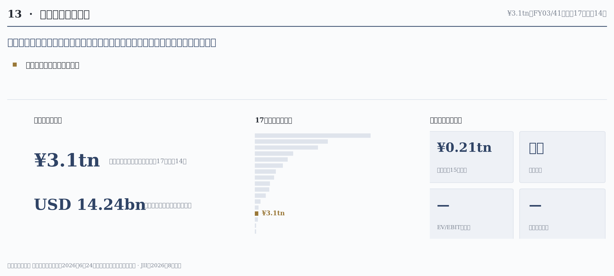
投資可能なシグナルは、ITER級部品の受注を上場企業が受注残として開示することだ。現時点で核融合案件を分けて示す会社はなく、受注から売上、営業利益まで追えない。未上場企業への資金調達も、上場株では取得できない。
見方が変わるのは、国内実証炉の事業主体が決まり、供給企業が新たなITER級受注を開示し、2026年の民間装置試験で決定的な結果が出る場合である。国内ロードマップ¥3.1tnは小さく分散しており、それだけで大手供給企業の利益を動かす規模ではない。
防災・国土強靱化
日本は老朽インフラの強靱化に約20兆円を法定計画で充てた。建設費と人手不足が予算増を吸収するため、受注量より利益率の改善が重要となる。
名目の建設投資は増えているが、実際の工事量は増えていない。国交省は2026年3月期の建設投資を¥75.57tn、そのうち政府投資を¥25.21tnと見積もる。建設工事費デフレーターは2021年3月期から2025年3月期に18.9%上昇し、名目投資の増加は16.7%にとどまったため、物理的な工事量は約1.8%減った計算になる。公共工事は同期間に実質11.5%減。建設経済研究所の2026年7月27日予測では、名目投資は2028年3月期に¥86.35tnへ達するが、公共工事の実質量は2027年3月期に2.8%増えた後、翌期は0.1%減る。
需要は避けられず、時期も読める。全国約73万橋のうち、2023年3月時点で築50年超は37%、2040年には75%になる見込み。下水道管の同割合も7%から34%へ上がる。2025年1月の八潮市道路陥没を受け、老朽化した大口径下水道幹線約5,000kmの優先調査が始まり、2031年3月期までに全区間を確認または補修することが求められている。
元請完成工事に占める維持補修は、2003年3月期の21.5%から31.0%へ上昇した。制約は人手である。建設就業者は1997年の685万人から478万人へ減り、2024年4月から時間外労働の上限規制も適用された。予算と受注があっても、施工能力が追いつかない。
ロードマップの防災枠¥2.6tnは、実際の拘束力ある約束を過小表示する。2025年6月6日に閣議決定された初の法定「国土強靱化実施中期計画」は、2027〜31年3月期に、全326施策のうち114の重点施策におおむね¥20tn超を投じ、うち約¥10.6tnを交通・通信・エネルギーのライフライン、すなわち道路、鉄道、空港、港湾を筆頭とする分野に充てる。防災庁も2027年3月期中に設置予定である。ただし一般会計の公共事業関係費は2022年3月期以降おおむね¥6.1tnで横ばい。年約¥4tnの計画は建設市場全体の約5%にすぎず、業界を急成長させるより、実質工事量の減少を止める役割が大きい。
投資家が見るべき変数は入札利益率である。計画は発注量を決めるが、競争が経済価値の帰属先を決める。各都道府県が名指しする橋、ダム、管路の案件で、建設会社がセグメント利益率の上昇を報告することが最初の有効なシグナルになる。人手不足は価格転嫁を支えるはずだが、開示利益率はまだそれを裏づけていない。
注目点は、2027年3月期の防災庁設置、2028年3月期概算要求の国土強靱化枠、各都道府県が公表する対象構造物リストである。保証された仕事量を利益率上昇へ変えた上場建設会社が現れるまでは、判断の根拠は確保された案件量であり、利益率の拡大ではない。
追い風
- 売上高の3分の2が自治体の水道資産から生じており、これらは予算の増減にかかわらず更新を要する。
- 同事業の受注残高2,715億円は、同事業の売上高の2.75年分にあたる。
- 連結営業利益は11.8%増の110億円が見込まれている。
リスク
- 水環境事業の受注高は26年3月期に31.6%減少し、受注残高も1.8%減少した。
- この期の成長は官需の事業ではなく民需の産業事業から生じた。
- 大型プラントは施工リスクを伴い、自治体の発注は年度をまたいで動く。
追い風
- 売上高の86.2%が国関係機関および地方自治体から生じており、強靱化計画を所管する省庁が筆頭に挙げられている。
- 同社自身が国土強靱化実施中期計画を需要要因として名指ししている。
- ネットキャッシュは時価総額の41%を占め、営業利益は6.7%増が見込まれている。
リスク
- 25年12月期の連結営業利益は2.1%減少し、売上高の伸びも1.3%にとどまった。
- 専門人材の採用が難しく、業務量の拡大速度に上限がある。
- 競争入札は、数量が増えても利益率を圧縮しうる。
追い風
- 省庁と高速道路会社3社が、ほぼ連結全体にあたる事業の主要顧客として記載されている。
- 橋梁とトンネルの補修は、強靱化計画が最も直接的に手当てする工事である。
- 営業利益率は25年6月期に22.9%であり、12社中で最も高い。
リスク
- 同社は強靱化計画の決定後にあたる2026年2月に計画を引き下げた。
- 現在の計画は増収0.3%、営業増益1.0%にとどまる。
- 技能労働者の不足が施工量の上限となる。11.2倍を上回るのは12社中3社だけである。
港湾・海岸インフラ
「港湾」と呼ばれる公的資金には二つの財布がある。¥1.2tnのロードマップはクレーンとソフトウェアを買う。年¥246.6bnの整備予算は岸壁と浚渫を買う。建設業者に届くのは後者である。
この節はその二つを分けることに尽きる。二つを混ぜて読めば、誤った資金に誤った企業を結び付けることになるからである。
一つ目はロードマップの項目である。政府は2041年3月期までに港湾・物流へ¥1.2tnを割り当てる。荷役機械¥0.4tn、次世代倉庫¥0.6tn、港湾の書類手続きを電子化するCyber Port¥0.2tnである。均等配分なら年約¥80bnであり、矢野経済研究所が2026年8月5日に2025年3月期を¥24,794.0bnと改めた物流15業種総市場に対しては小さい。単独で業界の採算を変える規模ではなく、買うのは建設ではなく機器とソフトウェアである。
本レポートのどの企業も、この¥1.2tnには結び付いていない。クレーンを買うなら荷役機械メーカーであり、岸壁クレーンの最大の供給者は中国のZPMCであり、そのシェアは約70%と広く引用されており、この数字は2024年9月の米下院2委員会の報告書に記載され、同報告書はさらに新聞報道を典拠としている。倉庫を買うなら開発業者かターミナル運営者である。いずれも海洋土木業者ではない。本レポートは、この項目に開示された重要な売上のつながりを持つ日本の上場企業を見つけられなかった。
二つ目は港湾整備の予算であり、以下の2社に届いているのはこちらである。国土交通省は令和8年度予算で港湾整備事業に国費¥246.6bnを、港湾海岸事業に¥15.3bnを計上した。これらは国費の数字である。同省は2026年4月に、国費に地方負担等を加えた事業費ベースで両事業へ¥253.5bnを配分した。この金額が上記の国費¥261.9bnを下回るのは、4月の配分が貸付金、出資金、調査費、工事諸費を含まないためであり、両者は広狭の関係ではなく別の尺度である。これに先立ち令和7年度補正予算で国費¥90.0bnがすでに措置されており、うち¥80.6bnが港湾整備事業、¥9.4bnが港湾海岸事業である。
この予算が何を買うかは、予算自身の内訳に書かれている。防災・減災、国土強靱化は¥126.1bnであり、両事業合計¥261.9bnの半分弱にあたる。耐震強化岸壁、粘り強い構造の防波堤、高潮・津波に対する海岸堤防の工事、そしてすでに立っている施設の予防保全である。さらに¥66.6bnが国際コンテナ戦略港湾の機能強化に、¥11.9bnが内航フェリー・RORO船ターミナルに充てられる。
もう一つの項目には特別な意味がある。事業費ベースで¥53.4bnが、同省自身の注記で「総合的な防衛体制の強化等に資する公共インフラ整備」として計上されている。これは五洋建設が26年3月期に開示した防衛省向け売上¥84.7bnに対応する予算項目であり、海洋土木業者が軍需品を作らずに防衛省を顧客として持ち得る理由でもある。
ただし、これを増加と読むことには問題がある。企業の話より先に述べておくべきことである。当初予算は横ばいである。港湾整備事業は令和8年度も前年比1.00倍、令和7年度も1.00倍であった。この2年の増加はすべて補正予算を通じて届いたものであり、令和6年度補正が¥92.9bn、令和7年度補正が¥80.6bnを上乗せした。同省が1.38倍という数字を公表しているのはこのうち前者の年度であり、令和6年度補正と令和7年度当初予算の合計を令和6年度当初予算と比べたものである。港湾局の予算資料は今年度について同種の比率を公表しておらず、港湾整備事業の項目で同じ計算をすると1.33倍となる。
骨太の方針2026は、そのやり方をやめよと述べている。補正予算依存からの脱却を掲げ、恒常的な施策は当初予算に計上すべきだとする。つまり、これまでの増加をすべて生んできた仕組みは、政策文書自身がやめよと言う仕組みである。その代わりに新設されたのが「強く豊かな日本」投資枠であり、政府はその規模を公表していない。
単年度の予算の背後には5年間の約束がある。第1次国土強靱化実施中期計画は2025年6月6日に閣議決定された。2026年度から2030年度を対象とし、全326施策のうち114を「推進が特に必要となる施策」と位置付け、その事業規模をおおむね20兆円強程度とする。港湾・海岸に関する施策も名指しで含まれている。耐震強化岸壁の整備、臨港道路の耐震化、粘り強い構造を導入した防波堤等の整備、そして新たな「協働防護」の枠組みによる気候変動適応である。同計画は港湾分の内訳を公表していないため、20兆円強のうち港湾に帰属する額を示すことはできない。
注目点は、8月末の各省庁の概算要求である。港湾の工事が補正予算から当初予算へ移るかどうかの最初の試金石となる。次いで秋の補正予算の規模と中身、そして「強く豊かな日本」投資枠に公表された金額が付くかどうかである。
追い風
- 日本の省庁2者が顧客として記載され、合計で売上高の4分の1を占める。
- 防衛省向けの売上は、26年度港湾予算のうち防衛関連の公共インフラ整備に充てられた534億円につながっている。
- 国内土木事業の受注高は26年3月期に37.9%増の3,406億円となった。
リスク
- ネット有利子負債は1,244億円あり、うち99億円はコマーシャルペーパーである。その残高は26年3月期中に99億円から898億円の間で振れた。
- 海外工事は、それ自体の施工リスクと回収リスクを負う規模になっている。
- 建設業の資金繰りは大型案件の進行時期によって振れる。
追い風
- 単一の省庁が連結売上高の19.6%を供給しており、開示基準を超える顧客はこの1者だけである。
- 242億円のネットキャッシュは時価総額の15%に相当する。
- 26年3月期の営業利益は過去最高となった。
リスク
- 27年3月期の営業利益は、その最高益から12.8%の減益が見込まれている。
- 海外工事の比率が20%から26%へ上がり、性質の異なるリスクが加わった。
- 大型案件は入札から竣工までの間に資材価格の上昇に直面する。
フードテック
食品市場は値上げで名目最高を更新する一方、家計の購入量は減少している。投資見通しの中心は植物工場と陸上養殖だが、商業採算はまだ確立していない。
農水省の国内生産額では、食品産業は2023年に過去最高の¥105.8tn、10年CAGRは約1.6%となった。ただし農場から外食まで同じ食品を複数段階で数える指標であり、最高額は消費量ではなく観光回復と値上げを反映する。農水省は2040年の家計食料支出を、2015年＝100に対し98と予測する。生鮮食品は75へ下がり、加工食品は111、1人当たり支出は116へ上がる。
フードテック自体に公的な市場統計はない。需要を決める要因は三つ。第一に食料自給率が低く、2025年3月期のカロリーベース自給率は38%。第二に人手不足で食品機械需要が増え、2022年の¥590.05bnから3年連続で伸び、2024年に過去最高となった。第三に輸出で、農林水産物・食品輸出は2024年に¥1,507.1bn、加工食品は2020年以降CAGR約9.3%で増えた。
ロードマップは、採算の弱い事業モデルに最大の資金を置く。2023年度末の植物工場は432カ所で、完全人工光型は195カ所。そのうち黒字は43%で、太陽光併用型温室の73%を下回る。電気代が売上の20〜35%を占め、生産の65%は差別化しにくいレタスやベビーリーフである。LEDが安くなっても赤字比率は2017年の58.3%から約57%へほぼ改善していない。陸上養殖はさらに初期段階で、登録件数は2024年1月の662から2026年1月の808へ増えたが、届出義務化の影響が混じる。新設サーモン施設は、稚魚投入から出荷までの完全な1サイクル実績をまだ公表していない。
ロードマップは2041年3月期までに¥9.7tnを置く。植物工場¥4.6tn、陸上養殖¥2.9tn、食品機械¥1.2tn、新食品¥1.0tn。植物工場の生産を37倍、陸上養殖を89倍にする前提だが、買い手は示されない。政府は認証、輸出支援、融資を行えても、生産物を買うわけではない。商業的な成否は、露地野菜や輸入魚に対する価格競争力で決まる。
注目点は、農水省補助金の採択企業、大型陸上養殖施設が初めて公表する完全養殖サイクルの採算、2030年の農林水産物・食品輸出¥5tn目標の進捗である。¥9.7tnは需要予測であり、確定した公費ではない。
コンテンツ・IP
海外の日本コンテンツ需要は複利で伸びる一方、消費額の4割超は海外プラットフォームとライセンシーに残る。投資機会は政府が新需要を作ることではなく、既存IPの取り分を高めることにある。
海外消費者による日本コンテンツ支出は2023年に¥5.8tnとなり、2022年の¥4.7tnから増え、10年前の約3倍に達した。アニメ市場は2024年に14.8%増の過去最高¥3,840.7bn。海外売上は¥2,170.2bnで全体の56.5%を占め、初めて国内を上回った。一方、実際に制作したスタジオの売上は¥362.1bnにすぎない。マンガ市場も7年連続最高の¥704.3bnとなった。
一部の伸びは円安でかさ上げされている。世界ゲーム市場¥31.0tnは円換算で5.0%増だが、為替影響を除くと2.6%減。政府が掲げる2033年の海外売上¥20tnには、10年間で年13.2%の成長が必要で、経産省が示す世界市場成長率5%を大きく上回る。達成には日本が大幅にシェアを奪う必要があるが、その経路を裏づける独立予測は資料にない。
需要を運ぶのは世界の動画配信と、マンガ発の作品群である。Netflixでは2026年上期だけで日本作品が61億時間超視聴された。デジタルマンガは¥512.2bnで市場の73%を占め、アニメ原作の供給源にもなる。ただし経産省は、海外のアニメ人気がマンガ売上へ同じ割合では波及していないと指摘する。
最大の漏出は収益化にある。海外消費額のうち日本企業へ戻るのは6割弱と経産省は推計する。4割超は海外プラットフォーム、流通会社、現地ライセンシーに残る。
制作能力は年約300作品で頭打ちとなり、人材不足で減少傾向にある。生成AIは、日本が強い2D表現と直接競合する。ロードマップは2033年度までに¥33.7tn、うちゲーム¥24.5tnを置くが、予算措置はない。具体的な政策手段はスマホソフトウェア競争促進法で、2025年12月18日に全面施行され、大手プラットフォームに代替アプリストアと決済手段の容認を求める。この法律は消費額を増やさずに、プラットフォーム手数料の一部を出版社・ゲーム会社へ移せる可能性がある。ただし海外需要の伸びは政策以前から続いている。
投資判断の要点
本レポートは12社を検討した。いずれも公的資金が業績を左右する規模の売上比率を占めており、うち7社では会社自身の開示が対価を払う公的機関を名指ししている。このうち3社は株価が割安であり、かつ資金がすでに使い終わったのではなく、これから届く位置にある。以下はその3社であり、それ以外は記していない。
判定基準は3社とも同じである。第一に、その会社自身の開示が公的機関を顧客として金額付きで記載していること。第二に、その資金が現に予算措置され動いている施策のものであること。第三に、新たな公的資金が届く前の、会社自身が現在見込む営業利益に対して株価が割安であること。
1 ・ 9768 いであ — 12社中で官需比率が最も高い
いであは調査と設計の会社である。公的機関が、現場を測り、環境を評価し、その後の工事を設計する業務を発注する。2025年12月期の売上高のうち、国関係機関が68.3%、地方自治体が17.9%を占めた。公的機関からの売上は86.2%であり、検討した12社の中で最も高い比率である。
同社は国関係の顧客として国土交通省を防衛省より先に挙げている。単体ベースで、受注の5分の4超を、価格だけでなく技術提案を評価する契約方式で獲得している。そして市場環境の説明では、第1次国土強靱化実施中期計画を需要の源として自ら名指ししている。最後の点が重要である。対象施策との結び付きは、本レポートの推論ではなく同社自身の主張だからである。
同社が挙げるこの計画は2026年度から2030年度までを対象とし、114の施策におよそ20兆円強を充てる。今年度に始まったばかりであり、資金は同社の後ろではなく前にある。
2026年8月5日終値時点で予想EV/EBITは4.5倍。これより低いのは内田洋行の4.3倍だけであり、同社は第一の基準を満たさない。ネットキャッシュ105億円は時価総額の41%にあたる。
これに対する留保。2025年12月期の連結営業利益は2.1%減少し、売上高の伸びは1.3%にとどまった。今期の会社計画は営業利益6.7%増である。専門人材の採用が難しく、予算がいくら大きくなっても調査・設計業務の拡大速度には上限がある。
2 ・ 1893 五洋建設 — 省庁2者で売上高の4分の1
五洋建設は国内最大の海洋土木業者である。岸壁を築き、港湾を浚渫し、埋立を行う。
2026年3月期の有価証券報告書には、10%の開示基準を超える顧客が3社記載されている。うち2社は日本の政府機関で、国土交通省が1,194億円、防衛省が847億円、合計2,041億円で売上高の25.7%にあたる。3社目はシンガポール政府の902億円である。
この会社には二つの別々の予算項目から資金が流れている。令和8年度の港湾整備事業費は国費2,466億円、港湾海岸事業費はさらに153億円である。国土強靱化はこの両事業を合わせた額のうち1,261億円を占める。事業費ベースでは534億円が防衛体制に資する公共インフラ整備に充てられており、これが上記の防衛省向け売上に対応する項目である。
2026年8月5日終値時点で予想EV/EBITは9.3倍。これは12社の中央値8.9倍を上回る。したがって3社のうち同社だけは同業比較で割安ではなく、価格ではなく開示の強さと二つの予算項目によって選ばれている。営業利益は6.7%増の590億円が見込まれ、国内土木事業の受注高は前期に37.9%増の3,406億円となった。
これに対する留保。港湾の節で述べたのと同じ論点だが、港湾の当初予算は2年続けて前年比1.00倍で横ばいであり、増加分はすべて、骨太の方針2026が依存から脱却せよと述べる補正予算を通じて届いてきた。ネット有利子負債は1,244億円あり、うち99億円はコマーシャルペーパーである。その残高は前期中に99億円から898億円の間で動いた。海外工事はそれ自体の施工リスクと回収リスクを負う規模になっており、シンガポール政府の項目は、開示された顧客売上のかなりの部分が日本の公的資金ではないことを示している。
3 ・ 1885 東亜建設工業 — 単一の省庁が全社売上の5分の1
東亜建設工業は、ここに挙げた海洋土木2社のうち規模が小さく、そして顧客の集中度が高い方である。五洋建設と同じ港湾工事と浚渫を手掛けるが、海外の比率が低く、一社の顧客が突出している。
10%の開示基準を超える顧客は国土交通省のみであり、2026年3月期で703億円、連結売上高の19.6%にあたる。開示では同省の工事が国内土木事業と「その他」に計上されており、両者合計の売上高は1,721億円で連結の48.0%にあたる。国内土木事業だけでは1,560億円、43.5%である。国内官公庁土木工事の受注残高は2026年3月31日時点で1,453億円あった。
2026年8月5日終値時点で予想EV/EBITは6.7倍。ネットキャッシュ242億円は時価総額の15%にあたる。
これに対する留保。3社の中で最も厳しい論点である。2026年3月期の営業利益は17.3%増の242億円と過去最高を記録したが、会社は今期を12.8%減の211億円と見込んでいる。公的支出の増加を理由にこの会社を買う者は、会社自身が減益を見込む年に買うことになる。
この落差が、1社に凝縮された本レポートの主張である。支出は約束された。利益はまだ追いついていない。
免責事項。 株式会社ジャパン・インベスター・インターフェースはIRコンサルティングを提供しており、投資助言業者または金融商品取引業者として登録されていない。本稿は調査・分析であり、有価証券の購入、売却または保有を推奨・勧誘するものではない。企業名の記載は、その企業への投資を推奨するものではない。数値は不完全または古くなっている可能性がある。投資判断にあたっては一次資料と有資格の専門家に当たられたい。